Time Domain Analysis: Photometry of Simulated Transients#
Kernel Information and Read-Only Status#
To run this notebook, please select “Roman Research Nexus {VERSION}” kernel at the top right of your window. For example “Roman Research Nexus 2026.2”.
This notebook is read-only. You can run cells and make edits, but you must save changes to a different location. We recommend saving the notebook within your home directory, or to a new folder within your home (e.g. file > save notebook as > my-nbs/nb.ipynb). Note that a directory must exist before you attempt to add a notebook to it.
Introduction#
This notebook continues the time-domain simulation notebook (from hereon the simulation notebook), which injects a Type Ia supernova into Roman WFI images and writes a time series of ASDF cutouts named roman_sn1a_*_<filter>.asdf.
Here we measure the same injected transient in those cutouts. The simulation notebook places the supernova at detector position $(X, Y) = (2000, 2000)$ and creates 400 pixel cutouts centered near $(X, Y) = (2050, 2050)$. In the cutouts analyzed here, the transient is therefore expected near $(x, y) = (150, 150)$.
We will:
load the simulated cutout time series,
perform background-subtracted aperture photometry,
perform PSF-fitting photometry using an STPSF WFI PSF grid,
compare the aperture and PSF measurements,
estimate signal-to-noise ratios,
compare recovered photometry against the injected
sncosmotruth model,make a simple difference-image light curve,
diagnose residual host-galaxy and background contamination,
fit a normalized light-curve amplitude and peak time,
repeat the measurement automatically for any additional simulated filters, and
make a fun gif of the light curve corresponding to the cutouts.
This notebook measures instrumental image fluxes. If calibrated photometric metadata are available in later simulation products, the same workflow can be extended to convert the measured fluxes into physical units or AB magnitudes.
Reference Data#
This notebook uses stpsf to generate the WFI point-spread-function model used for PSF photometry and aperture-correction estimates.
Local Run Settings#
If you want to run the notebook on your local machine, refer to the local installation instructions before proceeding. Depending on which reference data are missing, the following cell may take several minutes to execute.
On the Roman Research Nexus#
If you are working on the Nexus, then the ancillary reference data are pre-installed and this cell will execute instantly.
import os
import sys
import importlib.util
import notebook_data_dependencies as ndd
# Download reference data (if necessary)
result = ndd.install_files(packages=['stpsf'])
ndd.setup_env(result)
Did not find stpsf data in environment, setting it up...
Downloading and uncompressing file...
Found 1 data URL(s) to download and install...
Working on file 1 out of 1
Update environment variable with the following:
export STPSF_PATH='/home/runner/refdata/stpsf-data'
Reference data paths set to:
STPSF_PATH = /home/runner/refdata/stpsf-data
CRDS_SERVER_URL = https://roman-crds.stsci.edu (pre-set, not overwritten)
CRDS_CONTEXT = roman-edit (pre-set, not overwritten)
CRDS_OBSERVATORY = roman
CRDS_PATH = /home/runner/crds_cache (pre-set, not overwritten)
Imports#
We use the standard NumPy and Astropy stack, plus packages used elsewhere in the Roman notebook collection:
asdf for reading Roman ASDF cutouts
astropy.table for storing photometry results
astropy.stats for sigma clipping background pixels
astropy.visualization for image normalization
IPython.display for rendering generated GIF animations in the notebook
matplotlib for plotting images, light curves, and animations
numpy for array operations
photutils for aperture definitions and aperture statistics
Pillow for reading GIF frames from the simulation notebook animation
sncosmo for recreating and fitting the simulated supernova model
stpsf for Roman WFI PSF models
from pathlib import Path
import re
import warnings
import asdf
import astropy.units as u
from astropy.stats import SigmaClip
from astropy.table import Table, vstack
from astropy.time import Time
from astropy.visualization import simple_norm
from IPython.display import Image as NotebookImage, display
from matplotlib import animation
from matplotlib.colors import TwoSlopeNorm
import matplotlib.pyplot as plt
import numpy as np
from photutils.aperture import CircularAnnulus, CircularAperture, ApertureStats
from PIL import Image as PILImage, ImageSequence
import sncosmo
import stpsf
warnings.filterwarnings('ignore', module='astropy.wcs')
Tutorial Data#
This analysis starts from the cutout ASDF files created near the end of the simulation notebook. By default we look for all simulated filters:
roman_sn1a_*_*.asdf
The detailed walkthrough uses F129 as the primary filter when available, matching the default simulation notebook path. If you later uncomment the F184 simulation cells, or add additional filters, this notebook will discover those files and process them in the multi-filter section below.
Each filename contains the integer Modified Julian Date (MJD) for that simulated epoch. The helper functions below sort the files by filter and MJD and load the roman/data array from each ASDF file.
# Helper functions
def extract_mjd(path):
"""Extract the integer MJD encoded in a simulation cutout filename."""
match = re.search(r'roman_sn1a_(\d+)_([a-z0-9]+)\.asdf$', path.name.lower())
if match is None:
raise ValueError(f'Could not parse MJD and filter from {path.name}')
return float(match.group(1))
def extract_filter(path):
"""Extract the WFI filter name encoded in a simulation cutout filename."""
match = re.search(r'roman_sn1a_(\d+)_([a-z0-9]+)\.asdf$', path.name.lower())
if match is None:
raise ValueError(f'Could not parse MJD and filter from {path.name}')
return match.group(2).upper()
def discover_cutout_files(directory):
"""Find all cutout files in a directory and sort them by filter and MJD."""
return sorted(
directory.glob(cutout_pattern),
key=lambda path: (extract_filter(path), extract_mjd(path)),
)
def demo_light_curve_maggies(mjds, filter_name):
"""Return an injected demo light curve in maggies."""
try:
# Create a model usng the buildt-n "source" named `salt3-nir`
demo_model = sncosmo.Model(source='salt3-nir')
demo_t0 = Time('2027-06-08T13:25:42').mjd
demo_model.set(z=1.2, t0=demo_t0, x1=1, c=1)
demo_model.set_source_peakmag(20, 'f158', 'ab')
demo_abmag = demo_model.bandmag(filter_name.lower(), 'ab', mjds)
return 10 ** (-0.4 * demo_abmag)
except Exception:
demo_t0 = Time('2027-06-08T13:25:42').mjd
phase = np.asarray(mjds, dtype=float) - demo_t0
return 10 ** (-0.4 * 20.0) * np.exp(-0.5 * (phase / 22.0) ** 2)
def create_demo_cutouts(output_dir, filter_name='F129'):
"""Create lightweight ASDF cutouts when Roman I-Sim products are unavailable."""
output_dir.mkdir(exist_ok=True)
demo_files = discover_cutout_files(output_dir)
if len(demo_files) > 0:
return demo_files
rng = np.random.default_rng(202602)
demo_t0 = Time('2027-06-08T13:25:42').mjd
demo_mjds = np.arange(-40, 115, 5, dtype=float) + demo_t0
demo_mjds = np.round(demo_mjds).astype(int)
demo_shape = (400, 400)
y_grid, x_grid = np.indices(demo_shape, dtype=float)
source_x, source_y = 150.0, 150.0
psf_sigma = 1.25
psf_image = np.exp(-0.5 * (((x_grid - source_x) / psf_sigma) ** 2 + ((y_grid - source_y) / psf_sigma) ** 2))
psf_image /= np.sum(psf_image)
host_x, host_y = 154.0, 147.0
host_radius = np.sqrt(((x_grid - host_x) / 18.0) ** 2 + ((y_grid - host_y) / 11.0) ** 2)
host_image = 0.18 + 2.4 * np.exp(-host_radius)
host_image += 0.03 * (x_grid - np.mean(x_grid)) / np.max(x_grid)
demo_maggies = demo_light_curve_maggies(demo_mjds, filter_name)
finite = np.isfinite(demo_maggies)
if not np.any(finite) or np.nanmax(demo_maggies) <= 0:
demo_maggies = np.exp(-0.5 * ((demo_mjds - demo_t0) / 22.0) ** 2)
normalized_flux = demo_maggies / np.nanmax(demo_maggies)
for mjd, relative_flux in zip(demo_mjds, normalized_flux):
transient_flux = 460.0 * relative_flux
noise = rng.normal(0.0, 0.035, demo_shape)
image = host_image + transient_flux * psf_image + noise
output_path = output_dir / f'roman_sn1a_{mjd}_{filter_name.lower()}.asdf'
asdf.AsdfFile({'roman': {'data': image.astype(np.float32)}}).write_to(output_path)
return discover_cutout_files(output_dir)
Running the time-domain simulation notebook first is the recommended path because it creates Roman I-Sim products with the intended host galaxy and instrument modeling. If those files are not present, this notebook can create a small synthetic demo data set with the same filename and ASDF layout so the analysis workflow remains runnable end-to-end.
data_dir = Path('.')
cutout_pattern = 'roman_sn1a_*_*.asdf'
preferred_filter = 'F129'
allow_demo_data = True
demo_data_dir = data_dir / 'demo_cutouts'
all_cutout_files = discover_cutout_files(data_dir)
cutout_data_origin = 'Roman I-Sim simulation outputs'
if len(all_cutout_files) == 0:
if allow_demo_data:
print(
f'No files matching {cutout_pattern!r} were found in {data_dir.resolve()}. '
'Creating lightweight demo cutouts instead.'
)
data_dir = demo_data_dir
all_cutout_files = create_demo_cutouts(data_dir, preferred_filter)
cutout_data_origin = 'lightweight demo cutouts'
else:
raise FileNotFoundError(
f'No files matching {cutout_pattern!r} were found in {data_dir.resolve()}. '
'Run the time-domain simulation notebook first, set allow_demo_data=True, or update cutout_pattern.'
)
available_filters = sorted({extract_filter(path) for path in all_cutout_files})
primary_filter = preferred_filter if preferred_filter in available_filters else available_filters[0]
cutout_files = [
path for path in all_cutout_files
if extract_filter(path) == primary_filter
]
print(f'Data origin: {cutout_data_origin}')
print(f'Found {len(all_cutout_files)} total cutout files across filters: {available_filters}')
print(f'Using {primary_filter} for the detailed single-filter walkthrough.')
cutout_files[:5]
No files matching 'roman_sn1a_*_*.asdf' were found in /home/runner/work/roman_notebooks/roman_notebooks/notebooks/time_domain_analysis. Creating lightweight demo cutouts instead.
Downloading https://sncosmo.github.io/data/models/salt3-nir/salt3nir-p22.tar.gz
[Done]
Downloading https://sncosmo.github.io/data/bandpasses/roman-wfi/roman_f158.dat
[Done]
Downloading https://sncosmo.github.io/data/bandpasses/roman-wfi/roman_f129.dat
[Done]
/home/runner/micromamba/envs/ci-env/lib/python3.13/site-packages/sncosmo/models.py:189: RuntimeWarning: divide by zero encountered in log10
result[i] = -2.5 * np.log10(f / zpf)
Data origin: lightweight demo cutouts
Found 31 total cutout files across filters: ['F129']
Using F129 for the detailed single-filter walkthrough.
[PosixPath('demo_cutouts/roman_sn1a_61525_f129.asdf'),
PosixPath('demo_cutouts/roman_sn1a_61530_f129.asdf'),
PosixPath('demo_cutouts/roman_sn1a_61535_f129.asdf'),
PosixPath('demo_cutouts/roman_sn1a_61540_f129.asdf'),
PosixPath('demo_cutouts/roman_sn1a_61545_f129.asdf')]
We define a new helper function to read the Roman data array from one ASDF cutout file and to estimate the source centroid.
def read_cutout(path):
"""Read the Roman data array from one ASDF cutout file."""
with asdf.open(path) as af:
image = np.array(af['roman']['data'], dtype=float)
return image
def estimate_source_position(image, initial_position=(150.0, 150.0), half_size=10):
"""Estimate the source centroid in a small box around an initial position."""
x0, y0 = initial_position
x_min = max(int(np.floor(x0)) - half_size, 0)
x_max = min(int(np.floor(x0)) + half_size + 1, image.shape[1])
y_min = max(int(np.floor(y0)) - half_size, 0)
y_max = min(int(np.floor(y0)) + half_size + 1, image.shape[0])
stamp = image[y_min:y_max, x_min:x_max]
yy, xx = np.mgrid[y_min:y_max, x_min:x_max]
weights = stamp - np.nanmedian(stamp)
weights = np.clip(weights, 0, None)
if not np.any(np.isfinite(weights)) or np.nansum(weights) <= 0:
return initial_position
x_centroid = np.nansum(xx * weights) / np.nansum(weights)
y_centroid = np.nansum(yy * weights) / np.nansum(weights)
return (float(x_centroid), float(y_centroid))
Now, lets use them to get the cutouts, get the geometry inherited from the simulation notebook and peak index
images = np.array([read_cutout(path) for path in cutout_files])
mjds = np.array([extract_mjd(path) for path in cutout_files])
filters = np.array([extract_filter(path) for path in cutout_files])
peak_index = np.nanargmax([
np.nanmax(image[140:161, 140:161])
for image in images
])
# Geometry inherited from the simulation notebook, refined from the peak epoch.
nominal_cutout_target_position = (150.0, 150.0)
nominal_full_detector_target_position = (2000.0, 2000.0)
cutout_target_position = estimate_source_position(images[peak_index], nominal_cutout_target_position)
detector_to_cutout_offset = (
nominal_full_detector_target_position[0] - nominal_cutout_target_position[0],
nominal_full_detector_target_position[1] - nominal_cutout_target_position[1],
)
full_detector_target_position = (
cutout_target_position[0] + detector_to_cutout_offset[0],
cutout_target_position[1] + detector_to_cutout_offset[1],
)
filter_name = primary_filter
detector_name = 'SCA01'
print(f'Nominal cutout source position: {nominal_cutout_target_position}')
print(f'Refined cutout source position: ({cutout_target_position[0]:.2f}, {cutout_target_position[1]:.2f})')
Table({
'file': [path.name for path in cutout_files[:5]],
'mjd': mjds[:5],
'filter': filters[:5],
})
Nominal cutout source position: (150.0, 150.0)
Refined cutout source position: (150.47, 149.57)
| file | mjd | filter |
|---|---|---|
| str26 | float64 | str4 |
| roman_sn1a_61525_f129.asdf | 61525.0 | F129 |
| roman_sn1a_61530_f129.asdf | 61530.0 | F129 |
| roman_sn1a_61535_f129.asdf | 61535.0 | F129 |
| roman_sn1a_61540_f129.asdf | 61540.0 | F129 |
| roman_sn1a_61545_f129.asdf | 61545.0 | F129 |
Display the Simulated Transient#
Before measuring the light curve, we inspect one epoch near peak brightness. The red circle marks the fixed forced-photometry position inherited from the simulation notebook.
peak_index = np.nanargmax([
np.nanmax(image[140:161, 140:161])
for image in images
])
fig, ax = plt.subplots(figsize=(6, 6))
norm = simple_norm(images[peak_index], 'asinh', percent=99.5)
ax.imshow(images[peak_index], origin='lower', cmap='afmhot', norm=norm)
aperture = CircularAperture(cutout_target_position, r=3)
aperture.plot(ax=ax, color='red', lw=2)
ax.set_title(f'{filters[peak_index]} simulated epoch: MJD {mjds[peak_index]:.0f}')
ax.set_xlabel('Cutout X (pixels)')
ax.set_ylabel('Cutout Y (pixels)')
Text(0, 0.5, 'Cutout Y (pixels)')
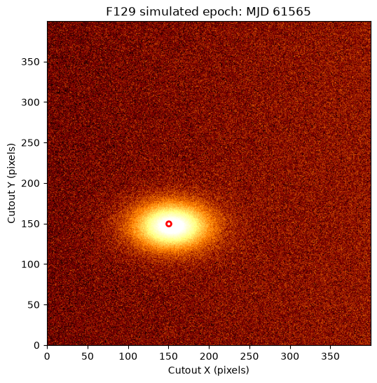
Aperture Photometry#
Forced aperture photometry uses a predefined source position and aperture size for every epoch. This is a natural first pass for a simulated time series because the source position is known from the injection step. For more on aperture photometry see the Aperture Photometry tutorial.
We estimate a local background from a circular annulus around the source and subtract that background from the circular source aperture. We also compute an optional aperture correction from the STPSF encircled-energy profile for the WFI detector, filter, and source position.
We define helper functions to estimate the aperture correction from an STPSF encircled-energy curve and to measure the local-background-subtracted aperture flux for an image.
def aperture_correction_from_stpsf(filter_name, detector_name, detector_position, radius_pix):
"""Estimate the aperture correction from an STPSF encircled-energy curve."""
wfi = stpsf.roman.WFI()
wfi.filter = filter_name.upper()
wfi.detector = detector_name
wfi.detector_position = detector_position
psf = wfi.calc_psf(display=False, nlambda=1)
ee_func = stpsf.measure_ee(psf)
radius_arcsec = (radius_pix * u.pixel * pixel_scale).to_value(u.arcsec)
return 1.0 / ee_func(radius_arcsec)
def measure_aperture_flux(image, position, radius, inner_radius, outer_radius, correction=1.0):
"""Measure local-background-subtracted aperture flux for one image."""
source_aperture = CircularAperture(position, r=radius)
sky_annulus = CircularAnnulus(position, r_in=inner_radius, r_out=outer_radius)
source_stats = ApertureStats(image, source_aperture)
sky_stats = ApertureStats(
image,
sky_annulus,
sigma_clip=SigmaClip(sigma=3.0, maxiters=5),
)
aperture_area = source_aperture.area
background_per_pixel = sky_stats.median
background_total = background_per_pixel * aperture_area
raw_flux = source_stats.sum
net_flux = raw_flux - background_total
# A compact uncertainty estimate from the scatter in the local sky annulus.
flux_err = np.sqrt(aperture_area) * sky_stats.std
return {
'raw_flux': raw_flux,
'background_per_pixel': background_per_pixel,
'background_total': background_total,
'aperture_flux': net_flux * correction,
'aperture_flux_err': flux_err * correction,
}
We derive the aperture correction for one image and with specific parameters.
# Selection parameters
aperture_radius = 3.0 # pixels
annulus_inner_radius = 8.0 # pixels
annulus_outer_radius = 15.0 # pixels
pixel_scale = 0.11 * u.arcsec / u.pixel
aperture_correction_cache = {}
aperture_correction = aperture_correction_from_stpsf(
filter_name=filter_name,
detector_name=detector_name,
detector_position=full_detector_target_position,
radius_pix=aperture_radius,
)
aperture_correction_cache[filter_name] = aperture_correction
print(f'{filter_name} aperture correction for r = {aperture_radius:.1f} pixels: {aperture_correction:.3f}')
F129 aperture correction for r = 3.0 pixels: 1.234
Now we measure the local-background-subtracted aperture flux all the images
aperture_rows = []
for path, mjd, filt, image in zip(cutout_files, mjds, filters, images):
result = measure_aperture_flux(
image,
cutout_target_position,
aperture_radius,
annulus_inner_radius,
annulus_outer_radius,
correction=aperture_correction,
)
aperture_rows.append({
'file': path.name,
'mjd': mjd,
'filter': filt,
**result,
})
aperture_table = Table(rows=aperture_rows)
aperture_table[:5]
| file | mjd | filter | raw_flux | background_per_pixel | background_total | aperture_flux | aperture_flux_err |
|---|---|---|---|---|---|---|---|
| str26 | float64 | str4 | float64 | float64 | float64 | float64 | float64 |
| roman_sn1a_61525_f129.asdf | 61525.0 | F129 | 65.40967691164082 | 1.1445989608764648 | 32.362773181164115 | 40.77686526507198 | 1.8954132676836153 |
| roman_sn1a_61530_f129.asdf | 61530.0 | F129 | 100.63278295644182 | 1.1394889950752258 | 32.21829230197271 | 84.41724194037138 | 1.9067792928501341 |
| roman_sn1a_61535_f129.asdf | 61535.0 | F129 | 155.06791300509246 | 1.1276179552078247 | 31.88264655723162 | 151.9993840740358 | 1.898063391381031 |
| roman_sn1a_61540_f129.asdf | 61540.0 | F129 | 222.10938567676408 | 1.1375049352645874 | 32.16219433244425 | 234.37751058605602 | 1.9221055330802854 |
| roman_sn1a_61545_f129.asdf | 61545.0 | F129 | 296.9062145341124 | 1.1380136013031006 | 32.176576525851765 | 326.65222947282774 | 1.924037495716232 |
PSF Photometry#
PSF photometry estimates the source flux by fitting a point-spread-function model directly to the pixels near the source. This is often useful when sources are faint, crowded, or when an aperture includes significant host-galaxy light.
The STPSF tutorial shows how to generate a grid of Roman WFI PSFs and evaluate it at arbitrary detector positions. We use that same pattern here. The PSF grid is evaluated at the refined source position, and each epoch is fit with a point source plus a local background plane:
$$ I(x, y) = F_{\rm PSF} P(x, y) + B_0 + B_x (x - x_0) + B_y (y - y_0) $$
where $P(x, y)$ is a unit-normalized PSF image, $F_{\rm PSF}$ is the fitted source flux, and the background-plane terms capture smooth host-galaxy light across the small fitting stamp.
We start by defining helper functions to define the PSF grid and to measure the PSF flux + local background.
def make_psf_grid(filter_name, detector_name, detector_position):
"""Create an STPSF grid for one WFI filter and detector position."""
wfi = stpsf.roman.WFI()
wfi.filter = filter_name.upper()
wfi.detector = detector_name
wfi.detector_position = detector_position
return wfi.psf_grid(num_psfs=9, all_detectors=False)
# Define a funtion ot measure the PSF flux + local background
def measure_psf_flux(
image,
cutout_position,
full_detector_position,
psf_grid,
half_size=15,
background_model='plane',
):
"""Fit a unit-normalized STPSF model plus a local background model."""
x0, y0 = cutout_position
x_min = int(np.round(x0)) - half_size
x_max = int(np.round(x0)) + half_size + 1
y_min = int(np.round(y0)) - half_size
y_max = int(np.round(y0)) + half_size + 1
stamp = image[y_min:y_max, x_min:x_max]
yy_cutout, xx_cutout = np.mgrid[y_min:y_max, x_min:x_max]
x_offset = full_detector_position[0] - cutout_position[0]
y_offset = full_detector_position[1] - cutout_position[1]
xx_detector = xx_cutout + x_offset
yy_detector = yy_cutout + y_offset
psf_unit = psf_grid.evaluate(
x=xx_detector,
y=yy_detector,
flux=1.0,
x_0=full_detector_position[0],
y_0=full_detector_position[1],
)
psf_unit = np.array(psf_unit, dtype=float)
psf_unit /= np.nansum(psf_unit)
mask = np.isfinite(stamp) & np.isfinite(psf_unit)
design_columns = [
psf_unit[mask].ravel(),
np.ones(np.count_nonzero(mask)),
]
if background_model == 'plane':
design_columns.extend([
(xx_cutout[mask] - x0).ravel(),
(yy_cutout[mask] - y0).ravel(),
])
elif background_model != 'constant':
raise ValueError("background_model must be 'constant' or 'plane'")
design_matrix = np.column_stack(design_columns)
data_vector = stamp[mask].ravel()
fit_values, _, _, _ = np.linalg.lstsq(design_matrix, data_vector, rcond=None)
flux = fit_values[0]
background = fit_values[1]
background_x_slope = fit_values[2] if background_model == 'plane' else 0.0
background_y_slope = fit_values[3] if background_model == 'plane' else 0.0
background_image = background + background_x_slope * (xx_cutout - x0) + background_y_slope * (yy_cutout - y0)
model = flux * psf_unit + background_image
residual = stamp - model
dof = max(np.count_nonzero(mask) - design_matrix.shape[1], 1)
residual_variance = np.nansum(residual[mask] ** 2) / dof
covariance = residual_variance * np.linalg.pinv(design_matrix.T @ design_matrix)
flux_err = np.sqrt(covariance[0, 0])
return {
'psf_flux': flux,
'psf_flux_err': flux_err,
'psf_background': background,
'psf_background_x_slope': background_x_slope,
'psf_background_y_slope': background_y_slope,
'psf_x': x0,
'psf_y': y0,
'psf_residual_rms': np.sqrt(np.nanmean(residual[mask] ** 2)),
'psf_max_abs_residual_fraction': np.nanmax(np.abs(residual)) / np.nanmax(np.abs(stamp)),
'stamp': stamp,
'psf_model': model,
'psf_background_image': background_image,
'psf_residual': residual,
}
Now create a PSF grid.
psf_fit_half_size = 15 # pixels
# A small PSF grid is enough for this single-detector, single-position example.
psf_grid_cache = {}
psf_grid = make_psf_grid(filter_name, detector_name, full_detector_target_position)
psf_grid_cache[filter_name] = psf_grid
Running instrument: WFI, filter: F129
Running detector: WFI01
Position 1/9: (0, 0) pixels
Attempted to get aberrations at field point (0, 0) which is outside the range of the reference data; approximating to nearest interpolated point (31.993143027288347, 0.015652222616090228)
Attempted to get aberrations at field point (0, 0) which is outside the range of the reference data; approximating to nearest interpolated point (31.993143027288347, 0.015652222616090228)
Attempted to get aberrations at field point (0, 0) which is outside the range of the reference data; approximating to nearest interpolated point (31.993143027288347, 0.015652222616090228)
Attempted to get aberrations at field point (0, 0) which is outside the range of the reference data; approximating to nearest interpolated point (31.993143027288347, 0.015652222616090228)
Attempted to get aberrations at field point (0, 0) which is outside the range of the reference data; approximating to nearest interpolated point (31.993143027288347, 0.015652222616090228)
Attempted to get aberrations at field point (0, 0) which is outside the range of the reference data; approximating to nearest interpolated point (31.993143027288347, 0.015652222616090228)
Attempted to get aberrations at field point (0, 0) which is outside the range of the reference data; approximating to nearest interpolated point (31.993143027288347, 0.015652222616090228)
Attempted to get aberrations at field point (0, 0) which is outside the range of the reference data; approximating to nearest interpolated point (31.993143027288347, 0.015652222616090228)
Attempted to get aberrations at field point (0, 0) which is outside the range of the reference data; approximating to nearest interpolated point (31.993143027288347, 0.015652222616090228)
Attempted to get aberrations at field point (0, 0) which is outside the range of the reference data; approximating to nearest interpolated point (31.993143027288347, 0.015652222616090228)
Position 1/9 centroid: (np.float64(201.1861484784975), np.float64(201.53324686097415))
Position 2/9: (0, 2048) pixels
Attempted to get aberrations at field point (0, 2048) which is outside the range of the reference data; approximating to nearest interpolated point (30.9911863199469, 2048.0151620285324)
Attempted to get aberrations at field point (0, 2048) which is outside the range of the reference data; approximating to nearest interpolated point (30.9911863199469, 2048.0151620285324)
Attempted to get aberrations at field point (0, 2048) which is outside the range of the reference data; approximating to nearest interpolated point (30.9911863199469, 2048.0151620285324)
Attempted to get aberrations at field point (0, 2048) which is outside the range of the reference data; approximating to nearest interpolated point (30.9911863199469, 2048.0151620285324)
Attempted to get aberrations at field point (0, 2048) which is outside the range of the reference data; approximating to nearest interpolated point (30.9911863199469, 2048.0151620285324)
Attempted to get aberrations at field point (0, 2048) which is outside the range of the reference data; approximating to nearest interpolated point (30.9911863199469, 2048.0151620285324)
Attempted to get aberrations at field point (0, 2048) which is outside the range of the reference data; approximating to nearest interpolated point (30.9911863199469, 2048.0151620285324)
Attempted to get aberrations at field point (0, 2048) which is outside the range of the reference data; approximating to nearest interpolated point (30.9911863199469, 2048.0151620285324)
Attempted to get aberrations at field point (0, 2048) which is outside the range of the reference data; approximating to nearest interpolated point (30.9911863199469, 2048.0151620285324)
Attempted to get aberrations at field point (0, 2048) which is outside the range of the reference data; approximating to nearest interpolated point (30.9911863199469, 2048.0151620285324)
Position 2/9 centroid: (np.float64(201.1317100494458), np.float64(201.52558235141015))
Position 3/9: (0, 4095) pixels
Attempted to get aberrations at field point (0, 4095) which is outside the range of the reference data; approximating to nearest input grid point
Attempted to get aberrations at field point (0, 4095) which is outside the range of the reference data; approximating to nearest input grid point
Attempted to get aberrations at field point (0, 4095) which is outside the range of the reference data; approximating to nearest input grid point
Attempted to get aberrations at field point (0, 4095) which is outside the range of the reference data; approximating to nearest input grid point
Attempted to get aberrations at field point (0, 4095) which is outside the range of the reference data; approximating to nearest input grid point
Attempted to get aberrations at field point (0, 4095) which is outside the range of the reference data; approximating to nearest input grid point
Attempted to get aberrations at field point (0, 4095) which is outside the range of the reference data; approximating to nearest input grid point
Attempted to get aberrations at field point (0, 4095) which is outside the range of the reference data; approximating to nearest input grid point
Attempted to get aberrations at field point (0, 4095) which is outside the range of the reference data; approximating to nearest input grid point
Attempted to get aberrations at field point (0, 4095) which is outside the range of the reference data; approximating to nearest input grid point
Position 3/9 centroid: (np.float64(201.0791296251614), np.float64(201.51704892115737))
Position 4/9: (2048, 0) pixels
Position 4/9 centroid: (np.float64(201.1922226809663), np.float64(201.62229933057256))
Position 5/9: (2048, 2048) pixels
Position 5/9 centroid: (np.float64(201.13401916890652), np.float64(201.63039878629877))
Position 6/9: (2048, 4095) pixels
Attempted to get aberrations at field point (2048, 4095) which is outside the range of the reference data; approximating to nearest interpolated point (2048.0050174304056, 4074.4937619323296)
Attempted to get aberrations at field point (2048, 4095) which is outside the range of the reference data; approximating to nearest interpolated point (2048.0050174304056, 4074.4937619323296)
Attempted to get aberrations at field point (2048, 4095) which is outside the range of the reference data; approximating to nearest interpolated point (2048.0050174304056, 4074.4937619323296)
Attempted to get aberrations at field point (2048, 4095) which is outside the range of the reference data; approximating to nearest interpolated point (2048.0050174304056, 4074.4937619323296)
Attempted to get aberrations at field point (2048, 4095) which is outside the range of the reference data; approximating to nearest interpolated point (2048.0050174304056, 4074.4937619323296)
Attempted to get aberrations at field point (2048, 4095) which is outside the range of the reference data; approximating to nearest interpolated point (2048.0050174304056, 4074.4937619323296)
Attempted to get aberrations at field point (2048, 4095) which is outside the range of the reference data; approximating to nearest interpolated point (2048.0050174304056, 4074.4937619323296)
Attempted to get aberrations at field point (2048, 4095) which is outside the range of the reference data; approximating to nearest interpolated point (2048.0050174304056, 4074.4937619323296)
Attempted to get aberrations at field point (2048, 4095) which is outside the range of the reference data; approximating to nearest interpolated point (2048.0050174304056, 4074.4937619323296)
Attempted to get aberrations at field point (2048, 4095) which is outside the range of the reference data; approximating to nearest interpolated point (2048.0050174304056, 4074.4937619323296)
Position 6/9 centroid: (np.float64(201.10523923076383), np.float64(201.66477462004127))
Position 7/9: (4095, 0) pixels
Position 7/9 centroid: (np.float64(201.19867950677187), np.float64(201.71232738681357))
Position 8/9: (4095, 2048) pixels
Position 8/9 centroid: (np.float64(201.16478982775345), np.float64(201.76433060832548))
Position 9/9: (4095, 4095) pixels
Attempted to get aberrations at field point (4095, 4095) which is outside the range of the reference data; approximating to nearest interpolated point (4095.004894881753, 4074.994618276213)
Attempted to get aberrations at field point (4095, 4095) which is outside the range of the reference data; approximating to nearest interpolated point (4095.004894881753, 4074.994618276213)
Attempted to get aberrations at field point (4095, 4095) which is outside the range of the reference data; approximating to nearest interpolated point (4095.004894881753, 4074.994618276213)
Attempted to get aberrations at field point (4095, 4095) which is outside the range of the reference data; approximating to nearest interpolated point (4095.004894881753, 4074.994618276213)
Attempted to get aberrations at field point (4095, 4095) which is outside the range of the reference data; approximating to nearest interpolated point (4095.004894881753, 4074.994618276213)
Attempted to get aberrations at field point (4095, 4095) which is outside the range of the reference data; approximating to nearest interpolated point (4095.004894881753, 4074.994618276213)
Attempted to get aberrations at field point (4095, 4095) which is outside the range of the reference data; approximating to nearest interpolated point (4095.004894881753, 4074.994618276213)
Attempted to get aberrations at field point (4095, 4095) which is outside the range of the reference data; approximating to nearest interpolated point (4095.004894881753, 4074.994618276213)
Attempted to get aberrations at field point (4095, 4095) which is outside the range of the reference data; approximating to nearest interpolated point (4095.004894881753, 4074.994618276213)
Attempted to get aberrations at field point (4095, 4095) which is outside the range of the reference data; approximating to nearest interpolated point (4095.004894881753, 4074.994618276213)
Position 9/9 centroid: (np.float64(201.13199432475577), np.float64(201.81459752157272))
We then get the PSF flux and background for a series of preselected cutouts and save them in a table (psf_table).
psf_rows = []
psf_diagnostics = {}
for path, mjd, filt, image in zip(cutout_files, mjds, filters, images):
result = measure_psf_flux(
image,
cutout_target_position,
full_detector_target_position,
psf_grid,
half_size=psf_fit_half_size,
)
psf_rows.append({
'file': path.name,
'mjd': mjd,
'filter': filt,
'psf_flux': result['psf_flux'],
'psf_flux_err': result['psf_flux_err'],
'psf_background': result['psf_background'],
'psf_background_x_slope': result['psf_background_x_slope'],
'psf_background_y_slope': result['psf_background_y_slope'],
'psf_x': result['psf_x'],
'psf_y': result['psf_y'],
'psf_residual_rms': result['psf_residual_rms'],
'psf_max_abs_residual_fraction': result['psf_max_abs_residual_fraction'],
})
psf_diagnostics[path.name] = result
psf_table = Table(rows=psf_rows)
psf_table[:5]
| file | mjd | filter | psf_flux | psf_flux_err | psf_background | psf_background_x_slope | psf_background_y_slope | psf_x | psf_y | psf_residual_rms | psf_max_abs_residual_fraction |
|---|---|---|---|---|---|---|---|---|---|---|---|
| str26 | float64 | str4 | float64 | float64 | float64 | float64 | float64 | float64 | float64 | float64 | float64 |
| roman_sn1a_61525_f129.asdf | 61525.0 | F129 | 13.935346491531448 | 1.1740599789110175 | 1.2160176709417787 | 0.013627428745918484 | -0.01849862837767159 | 150.4696553521533 | 149.5748627933132 | 0.36327172971429866 | 0.4187999451696031 |
| roman_sn1a_61530_f129.asdf | 61530.0 | F129 | 35.72213796450756 | 1.4516010910542279 | 1.2332818214877317 | 0.013254067845078524 | -0.018361047086818 | 150.4696553521533 | 149.5748627933132 | 0.44914710378897826 | 0.5520871949147577 |
| roman_sn1a_61535_f129.asdf | 61535.0 | F129 | 69.30864388751769 | 2.102539657292327 | 1.2581017619448587 | 0.013393677789446017 | -0.017866464495455273 | 150.4696553521533 | 149.5748627933132 | 0.6505572388268764 | 0.5976213250463683 |
| roman_sn1a_61540_f129.asdf | 61540.0 | F129 | 111.13586204528421 | 3.0401663080365067 | 1.2898321111210558 | 0.012898177750616498 | -0.01799381499670851 | 150.4696553521533 | 149.5748627933132 | 0.9406729580919124 | 0.6135691072171596 |
| roman_sn1a_61545_f129.asdf | 61545.0 | F129 | 157.35360626075345 | 4.152841327107456 | 1.3265062443465374 | 0.012566029254290638 | -0.017379125079890013 | 150.4696553521533 | 149.5748627933132 | 1.284951262478633 | 0.6267013098193152 |
Inspect the PSF Fit#
The panels below show the data, fitted PSF model, and residual image for the epoch near peak brightness. The data and model panels use the same intensity stretch; the residual panel uses a zero-centered diverging stretch so positive and negative structure are easier to interpret. These simulated cutouts do not carry a reliable physical data unit in the ASDF metadata, so the color bars are labeled in simulated L2 image units.
peak_file = cutout_files[peak_index].name
diagnostic = psf_diagnostics[peak_file]
fig, axes = plt.subplots(nrows=1, ncols=3, figsize=(12, 4), constrained_layout=True)
titles = ['Data', 'PSF model + background', 'Residual']
arrays = [
diagnostic['stamp'],
diagnostic['psf_model'],
diagnostic['psf_residual'],
]
data_model_values = np.concatenate([
diagnostic['stamp'].ravel(),
diagnostic['psf_model'].ravel(),
])
data_model_vmin, data_model_vmax = np.nanpercentile(data_model_values, [1, 99.5])
residual_limit = np.nanpercentile(np.abs(diagnostic['psf_residual']), 99)
image_unit_label = 'Simulated L2 image units'
data_model_images = []
for ax, title, array in zip(axes[:2], titles[:2], arrays[:2]):
image = ax.imshow(
array,
origin='lower',
cmap='afmhot',
vmin=data_model_vmin,
vmax=data_model_vmax,
)
data_model_images.append(image)
ax.set_title(title)
ax.set_xticks([])
ax.set_yticks([])
residual_image = axes[2].imshow(
diagnostic['psf_residual'],
origin='lower',
cmap='RdBu_r',
norm=TwoSlopeNorm(vcenter=0, vmin=-residual_limit, vmax=residual_limit),
)
axes[2].set_title(titles[2])
axes[2].set_xticks([])
axes[2].set_yticks([])
data_model_colorbar = fig.colorbar(
data_model_images[0],
ax=[axes[0], axes[1]],
shrink=0.82,
pad=0.02,
)
data_model_colorbar.set_label(image_unit_label)
residual_colorbar = fig.colorbar(
residual_image,
ax=axes[2],
shrink=0.82,
pad=0.02,
)
residual_colorbar.set_label(f'Data - model ({image_unit_label})')
fig.suptitle(f'PSF fit diagnostics: {peak_file}')
print(f"Fitted source position: x={diagnostic['psf_x']:.2f}, y={diagnostic['psf_y']:.2f}")
print(f"PSF flux: {diagnostic['psf_flux']:.2f} +/- {diagnostic['psf_flux_err']:.2f}")
print(f"Residual RMS: {diagnostic['psf_residual_rms']:.3f}")
print(
'Max absolute residual / max data value: '
f"{diagnostic['psf_max_abs_residual_fraction']:.3f}"
)
Fitted source position: x=150.47, y=149.57
PSF flux: 268.27 +/- 6.88
Residual RMS: 2.130
Max absolute residual / max data value: 0.637
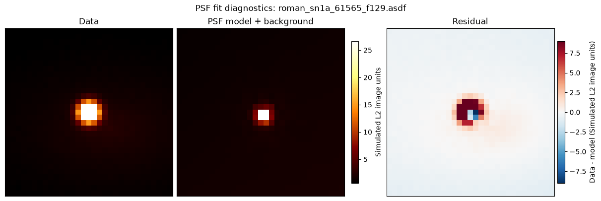
Compare Aperture and PSF Photometry#
Now we combine the aperture and PSF measurements into one table. The two methods will not be identical because they treat the host-galaxy light differently: aperture photometry subtracts a local annulus background, while PSF photometry fits a compact point-source component plus a constant local background across the fitting stamp.
# Replace division by zero with 0
def safe_ratio(numerator, denominator):
"""Return numerator / denominator while avoiding divide-by-zero warnings."""
numerator = np.asarray(numerator, dtype=float)
denominator = np.asarray(denominator, dtype=float)
return np.divide(
numerator,
denominator,
out=np.full_like(numerator, np.nan, dtype=float),
where=np.isfinite(denominator) & (denominator != 0),
)
# Extract the information from the psf_table
photometry = aperture_table.copy()
photometry['psf_flux'] = psf_table['psf_flux']
photometry['psf_flux_err'] = psf_table['psf_flux_err']
photometry['psf_background'] = psf_table['psf_background']
photometry['psf_background_x_slope'] = psf_table['psf_background_x_slope']
photometry['psf_background_y_slope'] = psf_table['psf_background_y_slope']
photometry['psf_x'] = psf_table['psf_x']
photometry['psf_y'] = psf_table['psf_y']
photometry['psf_residual_rms'] = psf_table['psf_residual_rms']
photometry['psf_max_abs_residual_fraction'] = psf_table['psf_max_abs_residual_fraction']
# Calculates the comparison values
photometry['flux_difference'] = photometry['aperture_flux'] - photometry['psf_flux']
photometry['flux_ratio'] = safe_ratio(photometry['aperture_flux'], photometry['psf_flux'])
photometry['aperture_snr'] = safe_ratio(photometry['aperture_flux'], photometry['aperture_flux_err'])
photometry['psf_snr'] = safe_ratio(photometry['psf_flux'], photometry['psf_flux_err'])
photometry['aperture_background_fraction'] = safe_ratio(
photometry['background_total'],
photometry['raw_flux'],
)
# Normalized fluxes
for column in ('aperture_flux', 'psf_flux'):
peak_flux = np.nanmax(photometry[column])
photometry[f'{column}_normalized'] = photometry[column] / peak_flux
photometry[:5]
| file | mjd | filter | raw_flux | background_per_pixel | background_total | aperture_flux | aperture_flux_err | psf_flux | psf_flux_err | psf_background | psf_background_x_slope | psf_background_y_slope | psf_x | psf_y | psf_residual_rms | psf_max_abs_residual_fraction | flux_difference | flux_ratio | aperture_snr | psf_snr | aperture_background_fraction | aperture_flux_normalized | psf_flux_normalized |
|---|---|---|---|---|---|---|---|---|---|---|---|---|---|---|---|---|---|---|---|---|---|---|---|
| str26 | float64 | str4 | float64 | float64 | float64 | float64 | float64 | float64 | float64 | float64 | float64 | float64 | float64 | float64 | float64 | float64 | float64 | float64 | float64 | float64 | float64 | float64 | float64 |
| roman_sn1a_61525_f129.asdf | 61525.0 | F129 | 65.40967691164082 | 1.1445989608764648 | 32.362773181164115 | 40.77686526507198 | 1.8954132676836153 | 13.935346491531448 | 1.1740599789110175 | 1.2160176709417787 | 0.013627428745918484 | -0.01849862837767159 | 150.4696553521533 | 149.5748627933132 | 0.36327172971429866 | 0.4187999451696031 | 26.841518773540535 | 2.926146493009859 | 21.51344298381186 | 11.869365059574706 | 0.49477041791356996 | 0.0745058515662191 | 0.051945454907511464 |
| roman_sn1a_61530_f129.asdf | 61530.0 | F129 | 100.63278295644182 | 1.1394889950752258 | 32.21829230197271 | 84.41724194037138 | 1.9067792928501341 | 35.72213796450756 | 1.4516010910542279 | 1.2332818214877317 | 0.013254067845078524 | -0.018361047086818 | 150.4696553521533 | 149.5748627933132 | 0.44914710378897826 | 0.5520871949147577 | 48.69510397586382 | 2.363163202164602 | 44.272162099154 | 24.608784179518832 | 0.3201570239383936 | 0.15424379624949605 | 0.13315798842625737 |
| roman_sn1a_61535_f129.asdf | 61535.0 | F129 | 155.06791300509246 | 1.1276179552078247 | 31.88264655723162 | 151.9993840740358 | 1.898063391381031 | 69.30864388751769 | 2.102539657292327 | 1.2581017619448587 | 0.013393677789446017 | -0.017866464495455273 | 150.4696553521533 | 149.5748627933132 | 0.6505572388268764 | 0.5976213250463683 | 82.6907401865181 | 2.193079759585521 | 80.08130011055165 | 32.964250470677975 | 0.2056044086708292 | 0.27772717383641793 | 0.2583551860693033 |
| roman_sn1a_61540_f129.asdf | 61540.0 | F129 | 222.10938567676408 | 1.1375049352645874 | 32.16219433244425 | 234.37751058605602 | 1.9221055330802854 | 111.13586204528421 | 3.0401663080365067 | 1.2898321111210558 | 0.012898177750616498 | -0.01799381499670851 | 150.4696553521533 | 149.5748627933132 | 0.9406729580919124 | 0.6135691072171596 | 123.2416485407718 | 2.108927813873031 | 121.93789911756431 | 36.555849511095126 | 0.14480340051568064 | 0.42824518021846053 | 0.41427049653835285 |
| roman_sn1a_61545_f129.asdf | 61545.0 | F129 | 296.9062145341124 | 1.1380136013031006 | 32.176576525851765 | 326.65222947282774 | 1.924037495716232 | 157.35360626075345 | 4.152841327107456 | 1.3265062443465374 | 0.012566029254290638 | -0.017379125079890013 | 150.4696553521533 | 149.5748627933132 | 1.284951262478633 | 0.6267013098193152 | 169.2986232120743 | 2.0759119364034566 | 169.77435741252532 | 37.89058956662658 | 0.10837286304815592 | 0.5968458429717423 | 0.586551950001353 |
Signal-to-Noise Ratio#
The aperture and PSF flux uncertainties are estimated differently, so their signal-to-noise ratios (S/N) should be interpreted as compact diagnostics rather than final uncertainties. They are still useful for checking whether the two extraction methods identify the same high-quality epochs.
First we compare the photometric S/N
fig, ax = plt.subplots(figsize=(8, 4))
ax.plot(photometry['mjd'], photometry['aperture_snr'], marker='o', label='Aperture S/N')
ax.plot(photometry['mjd'], photometry['psf_snr'], marker='s', label='PSF S/N')
ax.axhline(5, color='0.4', linestyle='--', linewidth=1, label='S/N = 5')
ax.set_xlabel('MJD')
ax.set_ylabel('Signal-to-noise ratio')
ax.set_title(f'{filter_name} photometric signal-to-noise')
ax.grid(alpha=0.3)
ax.legend()
<matplotlib.legend.Legend at 0x7fcf828612b0>
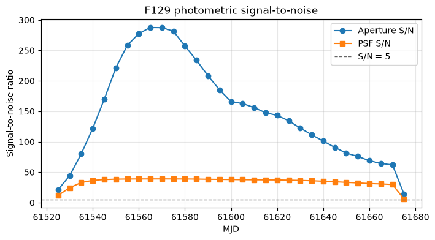
and use it to derive the light curve
fig, (ax_lc, ax_ratio) = plt.subplots(
nrows=2,
ncols=1,
figsize=(8, 7),
sharex=True,
gridspec_kw={'height_ratios': [3, 1]},
constrained_layout=True,
)
ax_lc.errorbar(
photometry['mjd'],
photometry['aperture_flux'],
yerr=photometry['aperture_flux_err'],
fmt='o-',
label='Aperture photometry',
)
ax_lc.errorbar(
photometry['mjd'],
photometry['psf_flux'],
yerr=photometry['psf_flux_err'],
fmt='s-',
label='PSF photometry',
)
ax_lc.set_ylabel('Flux (image units)')
ax_lc.set_title(f'{filter_name} light curve of the simulated supernova')
ax_lc.legend()
ax_ratio.scatter(photometry['mjd'], photometry['flux_ratio'])
ax_ratio.axhline(1.0, color='0.4', linestyle='--', linewidth=1)
ax_ratio.set_xlabel('MJD')
ax_ratio.set_ylabel('Aper. / PSF')
for ax in (ax_lc, ax_ratio):
ax.grid(alpha=0.3)
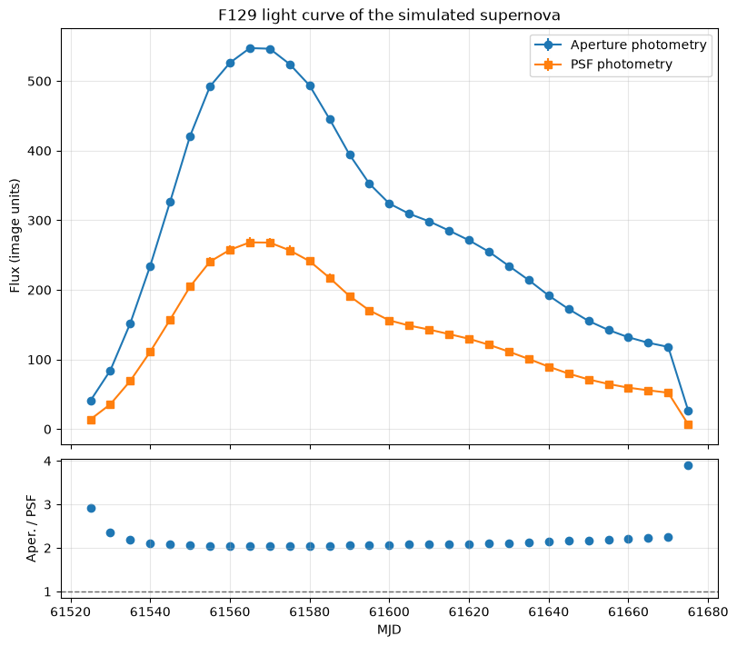
It is also useful to compare the two light-curve shapes after normalizing each method by its own peak flux. This emphasizes differences in the recovered time evolution rather than the absolute flux scale.
fig, ax = plt.subplots(figsize=(8, 5))
ax.plot(
photometry['mjd'],
photometry['aperture_flux_normalized'],
marker='o',
label='Aperture photometry',
)
ax.plot(
photometry['mjd'],
photometry['psf_flux_normalized'],
marker='s',
label='PSF photometry',
)
ax.set_xlabel('MJD')
ax.set_ylabel('Flux / peak flux')
ax.set_title(f'Normalized {filter_name} light-curve comparison')
ax.grid(alpha=0.3)
ax.legend()
<matplotlib.legend.Legend at 0x7fcf7f47f4d0>
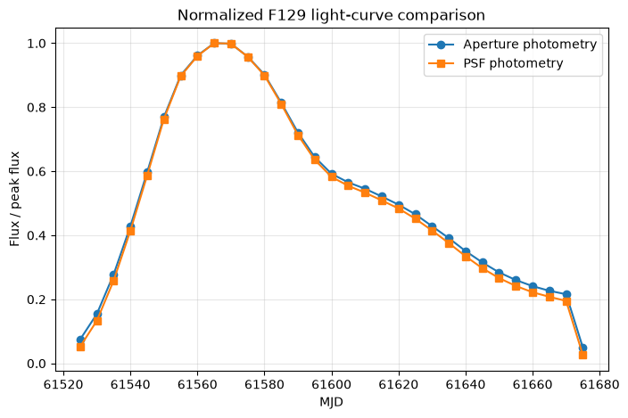
Light-Curve Analysis with sncosmo#
The simulation notebook generated the injected transient with sncosmo using the SALT3-NIR Type Ia supernova model. We can recreate that same model here and compare its expected light-curve shape with the recovered aperture and PSF photometry.
The measured image fluxes are not in sncosmo flux units, so we fit a simple linear transformation between the model light curve and each measured light curve:
$$ f_{\rm measured}(t) = A f_{\rm sncosmo}(t) + B $$
where $A$ is the flux scale and $B$ is a constant residual background term. This is enough to compare the recovered time evolution and estimate whether aperture and PSF photometry peak at the expected epoch.
First let’s define a function to evaluate the sncosmo model in one WFI filter and return maggies
# Create a sncosmo model for a Type Ia supernova using the built-in "salt3-nir" source.
sncosmo_model = sncosmo.Model(source='salt3-nir')
def sncosmo_maggies_for_filter(filter_name, mjd, model=sncosmo_model):
"""Evaluate the sncosmo model in one WFI filter and return maggies."""
abmag = model.bandmag(filter_name.lower(), 'ab', mjd)
return 10 ** (-0.4 * abmag)
We also define a function to fit the scaled + offset version of the supernova model to observed flux data.
def fit_scaled_sncosmo_model(measured_flux, measured_err, model_flux):
"""Fit measured_flux = scale * model_flux + offset."""
measured_flux = np.asarray(measured_flux, dtype=float)
measured_err = np.asarray(measured_err, dtype=float)
model_flux = np.asarray(model_flux, dtype=float)
mask = np.isfinite(measured_flux) & np.isfinite(model_flux)
if np.any(np.isfinite(measured_err) & (measured_err > 0)):
mask &= np.isfinite(measured_err) & (measured_err > 0)
weights = 1.0 / measured_err[mask] ** 2
else:
weights = np.ones(np.count_nonzero(mask))
design_matrix = np.column_stack([model_flux[mask], np.ones(np.count_nonzero(mask))])
sqrt_weights = np.sqrt(weights)
weighted_design = design_matrix * sqrt_weights[:, np.newaxis]
weighted_flux = measured_flux[mask] * sqrt_weights
scale, offset = np.linalg.lstsq(weighted_design, weighted_flux, rcond=None)[0]
fitted_flux = scale * model_flux + offset
residual = measured_flux - fitted_flux
chi2 = np.sum(((measured_flux[mask] - fitted_flux[mask]) ** 2) * weights)
dof = max(np.count_nonzero(mask) - 2, 1)
return {
'scale': scale,
'offset': offset,
'fitted_flux': fitted_flux,
'residual': residual,
'reduced_chi2': chi2 / dof,
}
Now let’s set our model with specific parameters and find the peak MJD
simulation_t0 = Time('2027-06-08T13:25:42').mjd
sncosmo_model.set(
z=1.2,
t0=simulation_t0,
x1=1,
c=1,
)
sncosmo_model.set_source_peakmag(20, 'f158', 'ab')
sncosmo_band = filter_name.lower()
model_abmag = sncosmo_model.bandmag(sncosmo_band, 'ab', photometry['mjd'])
model_maggies = 10 ** (-0.4 * model_abmag)
model_maggies_normalized = model_maggies / np.nanmax(model_maggies)
photometry['sncosmo_model_abmag'] = model_abmag
photometry['sncosmo_model_maggies'] = model_maggies
photometry['sncosmo_model_normalized'] = model_maggies_normalized
dense_mjd = np.linspace(np.nanmin(mjds), np.nanmax(mjds), 400)
dense_abmag = sncosmo_model.bandmag(sncosmo_band, 'ab', dense_mjd)
dense_maggies = 10 ** (-0.4 * dense_abmag)
dense_maggies_normalized = dense_maggies / np.nanmax(dense_maggies)
model_peak_mjd = dense_mjd[np.nanargmax(dense_maggies)]
print(f'{filter_name} sncosmo model peak MJD: {model_peak_mjd:.2f}')
F129 sncosmo model peak MJD: 61567.48
/home/runner/micromamba/envs/ci-env/lib/python3.13/site-packages/sncosmo/models.py:189: RuntimeWarning: divide by zero encountered in log10
result[i] = -2.5 * np.log10(f / zpf)
We then compare the output using the aperture and the PSF methods
aperture_sncosmo_fit = fit_scaled_sncosmo_model(
photometry['aperture_flux'],
photometry['aperture_flux_err'],
photometry['sncosmo_model_maggies'],
)
psf_sncosmo_fit = fit_scaled_sncosmo_model(
photometry['psf_flux'],
photometry['psf_flux_err'],
photometry['sncosmo_model_maggies'],
)
photometry['aperture_sncosmo_fit_flux'] = aperture_sncosmo_fit['fitted_flux']
photometry['aperture_sncosmo_residual'] = aperture_sncosmo_fit['residual']
photometry['psf_sncosmo_fit_flux'] = psf_sncosmo_fit['fitted_flux']
photometry['psf_sncosmo_residual'] = psf_sncosmo_fit['residual']
aperture_peak_mjd = photometry['mjd'][np.nanargmax(photometry['aperture_flux'])]
psf_peak_mjd = photometry['mjd'][np.nanargmax(photometry['psf_flux'])]
sncosmo_summary = Table(rows=[
{
'method': 'Aperture',
'scale': aperture_sncosmo_fit['scale'],
'offset': aperture_sncosmo_fit['offset'],
'reduced_chi2': aperture_sncosmo_fit['reduced_chi2'],
'measured_peak_mjd': aperture_peak_mjd,
'model_peak_mjd': model_peak_mjd,
'peak_offset_days': aperture_peak_mjd - model_peak_mjd,
},
{
'method': 'PSF',
'scale': psf_sncosmo_fit['scale'],
'offset': psf_sncosmo_fit['offset'],
'reduced_chi2': psf_sncosmo_fit['reduced_chi2'],
'measured_peak_mjd': psf_peak_mjd,
'model_peak_mjd': model_peak_mjd,
'peak_offset_days': psf_peak_mjd - model_peak_mjd,
},
])
sncosmo_summary
| method | scale | offset | reduced_chi2 | measured_peak_mjd | model_peak_mjd | peak_offset_days |
|---|---|---|---|---|---|---|
| str8 | float64 | float64 | float64 | float64 | float64 | float64 |
| Aperture | 18486465835.909264 | 27.052672505725624 | 0.01826602702517961 | 61565.0 | 61567.48120300752 | -2.4812030075190705 |
| PSF | 9286538442.655098 | 6.886823032988413 | 0.001609833818903963 | 61565.0 | 61567.48120300752 | -2.4812030075190705 |
Model-Calibrated Magnitudes#
The aperture and PSF fluxes above are measured in image units. To express them as magnitudes, we use the fitted sncosmo scale and offset to convert each measured flux back into model maggies, then compute AB magnitudes.
# Define helper functions
def maggies_to_abmag(maggies, maggies_err=None):
"""Convert linear AB maggies to AB magnitudes and optional magnitude errors."""
maggies = np.asarray(maggies, dtype=float)
abmag = np.full(maggies.shape, np.nan, dtype=float)
positive = np.isfinite(maggies) & (maggies > 0)
abmag[positive] = -2.5 * np.log10(maggies[positive])
if maggies_err is None:
return abmag, None
maggies_err = np.asarray(maggies_err, dtype=float)
abmag_err = np.full(maggies.shape, np.nan, dtype=float)
err_mask = positive & np.isfinite(maggies_err) & (maggies_err >= 0)
abmag_err[err_mask] = (2.5 / np.log(10)) * maggies_err[err_mask] / maggies[err_mask]
return abmag, abmag_err
vega_offset_cache = {}
def get_ab_minus_vega_offset(filter_name, mjd, model=sncosmo_model):
"""Return AB - Vega for one filter, or NaN if Vega data are unavailable."""
cache_key = filter_name.upper()
if cache_key in vega_offset_cache:
return vega_offset_cache[cache_key]
try:
abmag = model.bandmag(filter_name.lower(), 'ab', mjd)
vegamag = model.bandmag(filter_name.lower(), 'vega', mjd)
offsets = np.asarray(abmag, dtype=float) - np.asarray(vegamag, dtype=float)
offset = np.nanmedian(offsets[np.isfinite(offsets)])
except Exception as exc:
print(
f'Vega magnitudes are unavailable for {filter_name.upper()} '
f'({exc.__class__.__name__}); Vega columns will be NaN.'
)
offset = np.nan
vega_offset_cache[cache_key] = offset
return offset
def ensure_float_column(table, column_name):
"""Create a float column filled with NaN if it is not already present."""
if column_name not in table.colnames:
table[column_name] = np.full(len(table), np.nan, dtype=float)
def add_model_calibrated_magnitude_columns(
table,
flux_column,
flux_err_column,
fit_result,
prefix,
ab_minus_vega=np.nan,
mask=None,
):
"""Add model-calibrated maggies, AB magnitudes, and Vega magnitudes."""
if mask is None:
mask = np.ones(len(table), dtype=bool)
columns = [
f'{prefix}_maggies_calibrated',
f'{prefix}_maggies_calibrated_err',
f'{prefix}_abmag',
f'{prefix}_abmag_err',
f'{prefix}_vega_mag',
f'{prefix}_vega_mag_err',
]
for column in columns:
ensure_float_column(table, column)
scale = float(fit_result['scale'])
offset = float(fit_result['offset'])
if np.isfinite(scale) and scale != 0:
measured_flux = np.asarray(table[flux_column][mask], dtype=float)
measured_err = np.asarray(table[flux_err_column][mask], dtype=float)
maggies = (measured_flux - offset) / scale
maggies_err = measured_err / np.abs(scale)
else:
maggies = np.full(np.count_nonzero(mask), np.nan, dtype=float)
maggies_err = np.full(np.count_nonzero(mask), np.nan, dtype=float)
abmag, abmag_err = maggies_to_abmag(maggies, maggies_err)
table[f'{prefix}_maggies_calibrated'][mask] = maggies
table[f'{prefix}_maggies_calibrated_err'][mask] = maggies_err
table[f'{prefix}_abmag'][mask] = abmag
table[f'{prefix}_abmag_err'][mask] = abmag_err
if np.isfinite(ab_minus_vega):
table[f'{prefix}_vega_mag'][mask] = abmag - ab_minus_vega
table[f'{prefix}_vega_mag_err'][mask] = abmag_err
Vega magnitudes are also added when the local sncosmo Vega magnitude system is available.
ab_minus_vega = get_ab_minus_vega_offset(filter_name, photometry['mjd'])
if np.isfinite(ab_minus_vega):
photometry['sncosmo_model_vega_mag'] = photometry['sncosmo_model_abmag'] - ab_minus_vega
else:
photometry['sncosmo_model_vega_mag'] = np.full(len(photometry), np.nan, dtype=float)
add_model_calibrated_magnitude_columns(
photometry,
'aperture_flux',
'aperture_flux_err',
aperture_sncosmo_fit,
'aperture',
ab_minus_vega=ab_minus_vega,
)
add_model_calibrated_magnitude_columns(
photometry,
'psf_flux',
'psf_flux_err',
psf_sncosmo_fit,
'psf',
ab_minus_vega=ab_minus_vega,
)
photometry[
[
'mjd',
'filter',
'aperture_abmag',
'aperture_abmag_err',
'aperture_vega_mag',
'psf_abmag',
'psf_abmag_err',
'psf_vega_mag',
'sncosmo_model_abmag',
'sncosmo_model_vega_mag',
]
][:8]
/home/runner/micromamba/envs/ci-env/lib/python3.13/site-packages/sncosmo/models.py:189: RuntimeWarning: divide by zero encountered in log10
result[i] = -2.5 * np.log10(f / zpf)
Downloading https://sncosmo.github.io/data/spectra/alpha_lyr_stis_007.fits
[Done]
/tmp/ipykernel_2972/1817952548.py:31: RuntimeWarning: invalid value encountered in subtract
offsets = np.asarray(abmag, dtype=float) - np.asarray(vegamag, dtype=float)
| mjd | filter | aperture_abmag | aperture_abmag_err | aperture_vega_mag | psf_abmag | psf_abmag_err | psf_vega_mag | sncosmo_model_abmag | sncosmo_model_vega_mag |
|---|---|---|---|---|---|---|---|---|---|
| float64 | str4 | float64 | float64 | float64 | float64 | float64 | float64 | float64 | float64 |
| 61525.0 | F129 | 22.82341770832153 | 0.14994825880025203 | 21.866113959932658 | 22.799389278510624 | 0.18084914282526182 | 21.842085530121754 | 22.815232702251524 | 21.857928953862654 |
| 61530.0 | F129 | 21.270525385751377 | 0.03608951192580809 | 20.313221637362506 | 21.269822904656582 | 0.05465714049480454 | 20.31251915626771 | 21.266688245768464 | 20.309384497379593 |
| 61535.0 | F129 | 20.4253226549003 | 0.01649340040311279 | 19.46801890651143 | 20.431293569821612 | 0.03657059977763194 | 19.473989821432742 | 20.430013374345684 | 19.472709625956814 |
| 61540.0 | F129 | 19.87550639411432 | 0.01006584443019122 | 18.91820264572545 | 19.874454501570785 | 0.03166282068779331 | 18.917150753181915 | 19.87490019268315 | 18.91759644429428 |
| 61545.0 | F129 | 19.47578181425881 | 0.006972631033098165 | 18.51847806586994 | 19.476033061070574 | 0.029966016982174413 | 18.518729312681703 | 19.475182084403023 | 18.517878336014153 |
| 61550.0 | F129 | 19.178889316894946 | 0.0052444868113078755 | 18.221585568506075 | 19.178874155150552 | 0.029129121868882387 | 18.221570406761682 | 19.179227865384437 | 18.221924116995567 |
| 61555.0 | F129 | 18.998041243895855 | 0.004447966527931878 | 18.040737495506985 | 18.997780892891775 | 0.02879531958685275 | 18.040477144502905 | 18.997456425793875 | 18.040152677405004 |
| 61560.0 | F129 | 18.921579137276257 | 0.004120667544817387 | 17.964275388887387 | 18.92202593223201 | 0.028659353699461997 | 17.96472218384314 | 18.922088381815417 | 17.964784633426547 |
Let’s plot the model-calibrated magnitude light-curve
fig, ax = plt.subplots(figsize=(8, 5))
for prefix, marker, label in [
('aperture', 'o', 'Aperture photometry'),
('psf', 's', 'PSF photometry'),
]:
mag_column = f'{prefix}_abmag'
err_column = f'{prefix}_abmag_err'
valid = np.isfinite(photometry[mag_column])
ax.errorbar(
photometry['mjd'][valid],
photometry[mag_column][valid],
yerr=photometry[err_column][valid],
fmt=marker,
label=label,
)
ax.plot(dense_mjd, dense_abmag, color='0.2', label='Injected sncosmo model')
ax.axvline(model_peak_mjd, color='0.4', linestyle='--', linewidth=1, label='sncosmo peak')
ax.set_xlabel('MJD')
ax.set_ylabel('AB magnitude')
ax.set_title(f'{filter_name} model-calibrated magnitude light curve')
ax.invert_yaxis()
ax.grid(alpha=0.3)
ax.legend(fontsize=9)
if np.isfinite(ab_minus_vega):
secax = ax.secondary_yaxis(
'right',
functions=(
lambda abmag: abmag - ab_minus_vega,
lambda vegamag: vegamag + ab_minus_vega,
),
)
secax.set_ylabel('Vega magnitude')
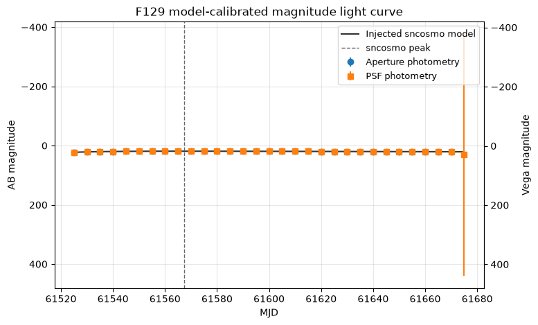
We can also plot the aperture and PSF photometry compared with the sncosmo model and residuals
fig, (ax_lc, ax_resid) = plt.subplots(
nrows=2,
ncols=1,
figsize=(8, 7),
sharex=True,
gridspec_kw={'height_ratios': [3, 1]},
constrained_layout=True,
)
aperture_dense_fit = aperture_sncosmo_fit['scale'] * dense_maggies + aperture_sncosmo_fit['offset']
psf_dense_fit = psf_sncosmo_fit['scale'] * dense_maggies + psf_sncosmo_fit['offset']
ax_lc.errorbar(
photometry['mjd'],
photometry['aperture_flux'],
yerr=photometry['aperture_flux_err'],
fmt='o',
label='Aperture photometry',
)
ax_lc.plot(dense_mjd, aperture_dense_fit, color='C0', alpha=0.7, label='Scaled sncosmo model (aperture)')
ax_lc.errorbar(
photometry['mjd'],
photometry['psf_flux'],
yerr=photometry['psf_flux_err'],
fmt='s',
label='PSF photometry',
)
ax_lc.plot(dense_mjd, psf_dense_fit, color='C1', alpha=0.7, label='Scaled sncosmo model (PSF)')
ax_lc.axvline(model_peak_mjd, color='0.3', linestyle='--', linewidth=1, label='sncosmo peak')
ax_lc.set_ylabel('Flux (image units)')
ax_lc.set_title(f'{filter_name} photometry compared with the input sncosmo model')
ax_lc.legend(fontsize=9)
ax_resid.axhline(0, color='0.4', linestyle='--', linewidth=1)
ax_resid.scatter(photometry['mjd'], photometry['aperture_sncosmo_residual'], label='Aperture residual')
ax_resid.scatter(photometry['mjd'], photometry['psf_sncosmo_residual'], label='PSF residual')
ax_resid.set_xlabel('MJD')
ax_resid.set_ylabel('Data - model')
ax_resid.legend(fontsize=9)
for ax in (ax_lc, ax_resid):
ax.grid(alpha=0.3)
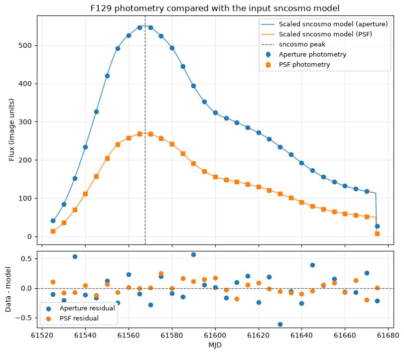
The fitted scale factors map the dimensionless sncosmo model fluxes into the image units measured from the simulated cutouts. The constant offsets are useful diagnostics: a large offset can indicate that residual host-galaxy light or sky background remains in the measurement. The residual panel is a quick check for time-dependent structure that is not captured by the input light-curve model.
Injected-Truth Comparison#
Because this is a simulation, we know the input sncosmo light-curve shape. The absolute image fluxes and sncosmo maggies live in different units, but after normalizing each curve by its own peak we can compare how well aperture and PSF photometry recover the injected time evolution.
photometry['aperture_truth_residual_normalized'] = (
photometry['aperture_flux_normalized'] - photometry['sncosmo_model_normalized']
)
photometry['psf_truth_residual_normalized'] = (
photometry['psf_flux_normalized'] - photometry['sncosmo_model_normalized']
)
truth_summary = Table(rows=[
{
'method': 'Aperture',
'rms_normalized_residual': np.sqrt(np.nanmean(photometry['aperture_truth_residual_normalized'] ** 2)),
'median_normalized_residual': np.nanmedian(photometry['aperture_truth_residual_normalized']),
},
{
'method': 'PSF',
'rms_normalized_residual': np.sqrt(np.nanmean(photometry['psf_truth_residual_normalized'] ** 2)),
'median_normalized_residual': np.nanmedian(photometry['psf_truth_residual_normalized']),
},
])
truth_summary
| method | rms_normalized_residual | median_normalized_residual |
|---|---|---|
| str8 | float64 | float64 |
| Aperture | 0.028946985333705433 | 0.025851502088473866 |
| PSF | 0.015008775292137922 | 0.013964189968344476 |
We can visualize the results
fig, (ax_lc, ax_resid) = plt.subplots(
nrows=2,
ncols=1,
figsize=(8, 7),
sharex=True,
gridspec_kw={'height_ratios': [3, 1]},
constrained_layout=True,
)
ax_lc.plot(dense_mjd, dense_maggies_normalized, color='0.2', label='Injected sncosmo truth')
ax_lc.scatter(photometry['mjd'], photometry['aperture_flux_normalized'], label='Aperture')
ax_lc.scatter(photometry['mjd'], photometry['psf_flux_normalized'], label='PSF')
ax_lc.set_ylabel('Flux / peak flux')
ax_lc.set_title(f'Normalized {filter_name} recovery compared with injected truth')
ax_lc.legend()
ax_resid.axhline(0, color='0.4', linestyle='--', linewidth=1)
ax_resid.scatter(
photometry['mjd'],
photometry['aperture_truth_residual_normalized'],
label='Aperture - truth',
)
ax_resid.scatter(
photometry['mjd'],
photometry['psf_truth_residual_normalized'],
label='PSF - truth',
)
ax_resid.set_xlabel('MJD')
ax_resid.set_ylabel('Residual')
ax_resid.legend()
for ax in (ax_lc, ax_resid):
ax.grid(alpha=0.3)
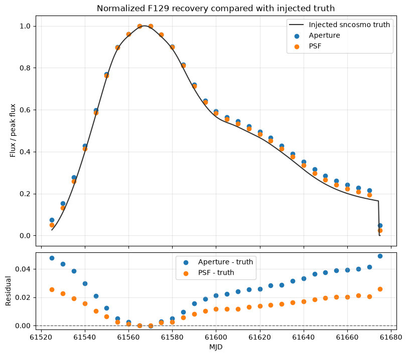
Difference-Image Photometry#
A common time-domain strategy is to subtract a reference image before measuring the transient. For this simulated sequence, we choose the epoch where the input sncosmo model is faintest as a simple reference template. This is not a full image-subtraction pipeline, but it demonstrates how template subtraction changes the aperture and PSF light curves.
template_index = int(np.nanargmin(photometry['sncosmo_model_maggies']))
template_image = images[template_index]
template_mjd = photometry['mjd'][template_index]
template_model_flux = photometry['sncosmo_model_maggies'][template_index]
difference_rows = []
for path, mjd, filt, image in zip(cutout_files, mjds, filters, images):
difference_image = image - template_image
aperture_result = measure_aperture_flux(
difference_image,
cutout_target_position,
aperture_radius,
annulus_inner_radius,
annulus_outer_radius,
correction=aperture_correction,
)
psf_result = measure_psf_flux(
difference_image,
cutout_target_position,
full_detector_target_position,
psf_grid,
half_size=psf_fit_half_size,
)
difference_rows.append({
'file': path.name,
'mjd': mjd,
'filter': filt,
'difference_aperture_flux': aperture_result['aperture_flux'],
'difference_aperture_flux_err': aperture_result['aperture_flux_err'],
'difference_psf_flux': psf_result['psf_flux'],
'difference_psf_flux_err': psf_result['psf_flux_err'],
})
difference_table = Table(rows=difference_rows)
photometry['difference_aperture_flux'] = difference_table['difference_aperture_flux']
photometry['difference_aperture_flux_err'] = difference_table['difference_aperture_flux_err']
photometry['difference_psf_flux'] = difference_table['difference_psf_flux']
photometry['difference_psf_flux_err'] = difference_table['difference_psf_flux_err']
photometry['difference_model_maggies'] = photometry['sncosmo_model_maggies'] - template_model_flux
photometry['difference_aperture_snr'] = safe_ratio(
photometry['difference_aperture_flux'],
photometry['difference_aperture_flux_err'],
)
photometry['difference_psf_snr'] = safe_ratio(
photometry['difference_psf_flux'],
photometry['difference_psf_flux_err'],
)
print(f'Using MJD {template_mjd:.0f} as the difference-image reference epoch.')
difference_table[:5]
Using MJD 61675 as the difference-image reference epoch.
/tmp/ipykernel_2972/719397172.py:76: RuntimeWarning: invalid value encountered in scalar divide
'psf_max_abs_residual_fraction': np.nanmax(np.abs(residual)) / np.nanmax(np.abs(stamp)),
| file | mjd | filter | difference_aperture_flux | difference_aperture_flux_err | difference_psf_flux | difference_psf_flux_err |
|---|---|---|---|---|---|---|
| str26 | float64 | str4 | float64 | float64 | float64 | float64 |
| roman_sn1a_61525_f129.asdf | 61525.0 | F129 | 14.026397049483185 | 0.30851481783480456 | 7.045512679766618 | 0.22995743845251787 |
| roman_sn1a_61530_f129.asdf | 61530.0 | F129 | 57.46425695380687 | 0.29398576074635996 | 28.832304152742736 | 0.7442808893897248 |
| roman_sn1a_61535_f129.asdf | 61535.0 | F129 | 124.66636821931772 | 0.3185763697031807 | 62.41881007575284 | 1.5888463672890045 |
| roman_sn1a_61540_f129.asdf | 61540.0 | F129 | 207.51836022771582 | 0.3146753672564536 | 104.24602823351941 | 2.629915005690077 |
| roman_sn1a_61545_f129.asdf | 61545.0 | F129 | 299.8493790596286 | 0.318880768641555 | 150.4637724489886 | 3.801126161583328 |
difference_aperture_fit = fit_scaled_sncosmo_model(
photometry['difference_aperture_flux'],
photometry['difference_aperture_flux_err'],
photometry['difference_model_maggies'],
)
difference_psf_fit = fit_scaled_sncosmo_model(
photometry['difference_psf_flux'],
photometry['difference_psf_flux_err'],
photometry['difference_model_maggies'],
)
photometry['difference_aperture_sncosmo_fit_flux'] = difference_aperture_fit['fitted_flux']
photometry['difference_aperture_sncosmo_residual'] = difference_aperture_fit['residual']
photometry['difference_psf_sncosmo_fit_flux'] = difference_psf_fit['fitted_flux']
photometry['difference_psf_sncosmo_residual'] = difference_psf_fit['residual']
add_model_calibrated_magnitude_columns(
photometry,
'difference_aperture_flux',
'difference_aperture_flux_err',
difference_aperture_fit,
'difference_aperture',
ab_minus_vega=ab_minus_vega,
)
add_model_calibrated_magnitude_columns(
photometry,
'difference_psf_flux',
'difference_psf_flux_err',
difference_psf_fit,
'difference_psf',
ab_minus_vega=ab_minus_vega,
)
difference_sncosmo_summary = Table(rows=[
{
'method': 'Difference aperture',
'template_mjd': template_mjd,
'scale': difference_aperture_fit['scale'],
'offset': difference_aperture_fit['offset'],
'reduced_chi2': difference_aperture_fit['reduced_chi2'],
},
{
'method': 'Difference PSF',
'template_mjd': template_mjd,
'scale': difference_psf_fit['scale'],
'offset': difference_psf_fit['offset'],
'reduced_chi2': difference_psf_fit['reduced_chi2'],
},
])
difference_sncosmo_summary
| method | template_mjd | scale | offset | reduced_chi2 |
|---|---|---|---|---|
| str19 | float64 | float64 | float64 | float64 |
| Difference aperture | 61675.0 | 18487495639.7506 | 0.08044071413572725 | 0.2444563514856384 |
| Difference PSF | 61675.0 | 9277524662.956182 | 0.08478422762009948 | 0.004768983452158653 |
Ploting the results
fig, ax = plt.subplots(figsize=(8, 5))
ax.errorbar(
photometry['mjd'],
photometry['difference_aperture_flux'],
yerr=photometry['difference_aperture_flux_err'],
fmt='o-',
label='Difference aperture',
)
ax.errorbar(
photometry['mjd'],
photometry['difference_psf_flux'],
yerr=photometry['difference_psf_flux_err'],
fmt='s-',
label='Difference PSF',
)
ax.plot(
photometry['mjd'],
photometry['difference_aperture_sncosmo_fit_flux'],
color='C0',
alpha=0.7,
label='Scaled model (difference aperture)',
)
ax.plot(
photometry['mjd'],
photometry['difference_psf_sncosmo_fit_flux'],
color='C1',
alpha=0.7,
label='Scaled model (difference PSF)',
)
ax.axhline(0, color='0.4', linestyle='--', linewidth=1)
ax.axvline(template_mjd, color='0.5', linestyle=':', linewidth=1, label='Reference epoch')
ax.set_xlabel('MJD')
ax.set_ylabel('Difference flux (image units)')
ax.set_title(f'{filter_name} simple template-subtracted light curve')
ax.grid(alpha=0.3)
ax.legend(fontsize=9)
<matplotlib.legend.Legend at 0x7fcf7f043110>
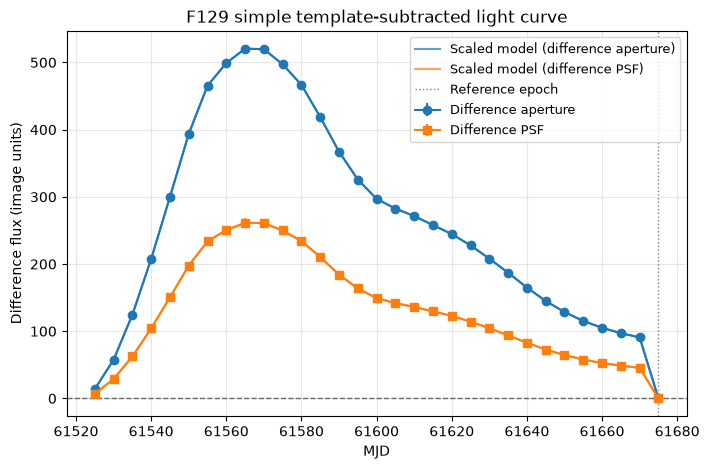
Host-Galaxy and Background Diagnostics#
The supernova was injected near a host galaxy, so residual host light can bias the measured transient flux. The diagnostics below look for correlations between photometric residuals and local background estimates. Strong trends can indicate that a method is still sensitive to host-galaxy structure or imperfect background removal.
# Define a helper function to compute correlation coefficients while ignoring NaN values
def finite_correlation(x, y):
"""Compute a Pearson correlation coefficient for finite values only."""
x = np.asarray(x, dtype=float)
y = np.asarray(y, dtype=float)
mask = np.isfinite(x) & np.isfinite(y)
if np.count_nonzero(mask) < 3:
return np.nan
return np.corrcoef(x[mask], y[mask])[0, 1]
# Compute correlations between photometry and background values
photometry['local_background_difference'] = (
photometry['background_per_pixel'] - photometry['psf_background']
)
photometry['absolute_truth_residual_difference'] = (
np.abs(photometry['aperture_truth_residual_normalized'])
- np.abs(photometry['psf_truth_residual_normalized'])
)
host_diagnostics = Table(rows=[
{
'diagnostic': 'Aperture residual vs aperture background',
'correlation': finite_correlation(
photometry['aperture_truth_residual_normalized'],
photometry['background_per_pixel'],
),
},
{
'diagnostic': 'PSF residual vs fitted PSF background',
'correlation': finite_correlation(
photometry['psf_truth_residual_normalized'],
photometry['psf_background'],
),
},
{
'diagnostic': 'Aperture / PSF flux ratio vs aperture background',
'correlation': finite_correlation(
photometry['flux_ratio'],
photometry['background_per_pixel'],
),
},
{
'diagnostic': 'Aperture background fraction vs truth residual difference',
'correlation': finite_correlation(
photometry['aperture_background_fraction'],
photometry['absolute_truth_residual_difference'],
),
},
])
host_diagnostics
| diagnostic | correlation |
|---|---|
| str57 | float64 |
| Aperture residual vs aperture background | 0.1077282022099978 |
| PSF residual vs fitted PSF background | -0.9986078131191547 |
| Aperture / PSF flux ratio vs aperture background | 0.2048584669843213 |
| Aperture background fraction vs truth residual difference | 0.7883006930576953 |
Visualizing the residuals vs background and how the trransient flux compares with time using both methods.
fig, axes = plt.subplots(nrows=1, ncols=2, figsize=(11, 4), constrained_layout=True)
axes[0].scatter(
photometry['background_per_pixel'],
photometry['aperture_truth_residual_normalized'],
label='Aperture',
)
axes[0].scatter(
photometry['psf_background'],
photometry['psf_truth_residual_normalized'],
label='PSF',
)
axes[0].axhline(0, color='0.4', linestyle='--', linewidth=1)
axes[0].set_xlabel('Local background estimate')
axes[0].set_ylabel('Normalized residual from truth')
axes[0].set_title('Residuals vs. background')
axes[0].legend()
axes[1].scatter(photometry['mjd'], photometry['flux_ratio'])
axes[1].axhline(1, color='0.4', linestyle='--', linewidth=1)
axes[1].set_xlabel('MJD')
axes[1].set_ylabel('Aperture / PSF flux')
axes[1].set_title('Method ratio over time')
for ax in axes:
ax.grid(alpha=0.3)
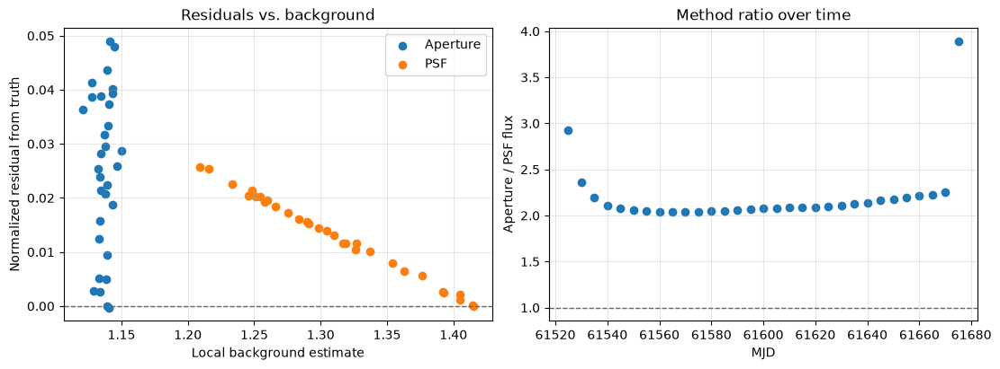
Normalized sncosmo Fit for Peak Time#
The previous sncosmo comparison held the simulation parameters fixed and only fit a flux scale plus constant offset. We can also ask whether the recovered normalized light curve prefers the same peak time, $t_0$, as the injected model.
# Define a function to fit normalized measured fluxes with a grid of sncosmo t0 values
def fit_normalized_t0_grid(measured_normalized, measured_err, mjd, filter_name, t0_grid):
"""Fit normalized measured fluxes with a grid of sncosmo t0 values."""
measured_normalized = np.asarray(measured_normalized, dtype=float)
measured_err = np.asarray(measured_err, dtype=float)
mjd = np.asarray(mjd, dtype=float)
fit_model = sncosmo.Model(source='salt3-nir')
fit_model.set(z=1.2, x1=1, c=1)
fit_model.set_source_peakmag(20, 'f158', 'ab')
rows = []
for trial_t0 in t0_grid:
fit_model.set(t0=trial_t0)
trial_maggies = sncosmo_maggies_for_filter(filter_name, mjd, model=fit_model)
trial_model = trial_maggies / np.nanmax(trial_maggies)
fit = fit_scaled_sncosmo_model(measured_normalized, measured_err, trial_model)
rows.append({
't0': trial_t0,
'scale': fit['scale'],
'offset': fit['offset'],
'reduced_chi2': fit['reduced_chi2'],
})
results = Table(rows=rows)
best_index = int(np.nanargmin(results['reduced_chi2']))
return results, results[best_index]
Here we scan a small grid of possible t0 values around the injected value. For each trial t0, we evaluate the SALT3-NIR model, normalize it, and fit a linear amplitude and offset to the normalized measured light curve.
t0_grid = simulation_t0 + np.linspace(-10, 10, 201)
aperture_norm_err = safe_ratio(photometry['aperture_flux_err'], np.nanmax(photometry['aperture_flux']))
psf_norm_err = safe_ratio(photometry['psf_flux_err'], np.nanmax(photometry['psf_flux']))
aperture_t0_grid, aperture_best_t0 = fit_normalized_t0_grid(
photometry['aperture_flux_normalized'],
aperture_norm_err,
photometry['mjd'],
filter_name,
t0_grid,
)
psf_t0_grid, psf_best_t0 = fit_normalized_t0_grid(
photometry['psf_flux_normalized'],
psf_norm_err,
photometry['mjd'],
filter_name,
t0_grid,
)
t0_fit_summary = Table(rows=[
{
'method': 'Aperture',
'best_t0': aperture_best_t0['t0'],
't0_offset_days': aperture_best_t0['t0'] - simulation_t0,
'scale': aperture_best_t0['scale'],
'offset': aperture_best_t0['offset'],
'reduced_chi2': aperture_best_t0['reduced_chi2'],
},
{
'method': 'PSF',
'best_t0': psf_best_t0['t0'],
't0_offset_days': psf_best_t0['t0'] - simulation_t0,
'scale': psf_best_t0['scale'],
'offset': psf_best_t0['offset'],
'reduced_chi2': psf_best_t0['reduced_chi2'],
},
])
t0_fit_summary
/home/runner/micromamba/envs/ci-env/lib/python3.13/site-packages/sncosmo/models.py:189: RuntimeWarning: divide by zero encountered in log10
result[i] = -2.5 * np.log10(f / zpf)
/home/runner/micromamba/envs/ci-env/lib/python3.13/site-packages/sncosmo/models.py:189: RuntimeWarning: invalid value encountered in log10
result[i] = -2.5 * np.log10(f / zpf)
/home/runner/micromamba/envs/ci-env/lib/python3.13/site-packages/sncosmo/models.py:189: RuntimeWarning: divide by zero encountered in log10
result[i] = -2.5 * np.log10(f / zpf)
/home/runner/micromamba/envs/ci-env/lib/python3.13/site-packages/sncosmo/models.py:189: RuntimeWarning: invalid value encountered in log10
result[i] = -2.5 * np.log10(f / zpf)
| method | best_t0 | t0_offset_days | scale | offset | reduced_chi2 |
|---|---|---|---|---|---|
| str8 | float64 | float64 | float64 | float64 | float64 |
| Aperture | 61564.55951388889 | 0.0 | 0.9507421343786253 | 0.049429557399244275 | 0.018266027025179345 |
| PSF | 61564.55951388889 | 0.0 | 0.97435214406621 | 0.025671349868014372 | 0.0016098338189039956 |
We now plt the results
fig, ax = plt.subplots(figsize=(8, 4))
ax.plot(aperture_t0_grid['t0'] - simulation_t0, aperture_t0_grid['reduced_chi2'], label='Aperture')
ax.plot(psf_t0_grid['t0'] - simulation_t0, psf_t0_grid['reduced_chi2'], label='PSF')
ax.axvline(0, color='0.4', linestyle='--', linewidth=1, label='Injected t0')
ax.set_xlabel('Trial t0 - injected t0 (days)')
ax.set_ylabel('Reduced chi-square')
ax.set_title(f'{filter_name} normalized t0 scan')
ax.grid(alpha=0.3)
ax.legend()
<matplotlib.legend.Legend at 0x7fcf7f3ee850>
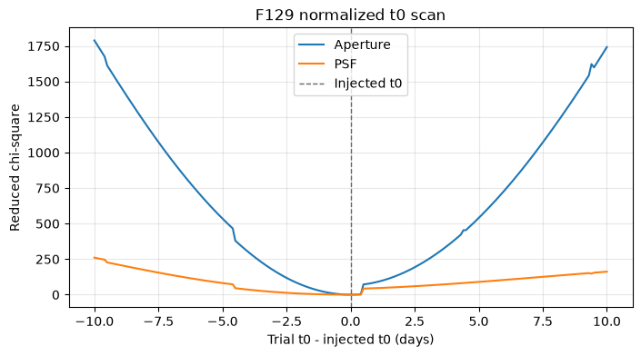
Multi-Filter Photometry#
The default simulation notebook writes F129 cutouts, and includes commented lines for F184. The functions above are filter-aware, so if additional files matching roman_sn1a_*_*.asdf are present, the cell below measures each filter and builds a combined photometry table.
For filters beyond the primary walkthrough filter, the notebook computes a matching aperture correction and STPSF grid before measuring aperture and PSF fluxes.
def get_aperture_correction(filter_name):
"""Return a cached aperture correction for one filter."""
if filter_name not in aperture_correction_cache:
aperture_correction_cache[filter_name] = aperture_correction_from_stpsf(
filter_name=filter_name,
detector_name=detector_name,
detector_position=full_detector_target_position,
radius_pix=aperture_radius,
)
return aperture_correction_cache[filter_name]
def get_psf_grid(filter_name):
"""Return a cached STPSF grid for one filter."""
if filter_name not in psf_grid_cache:
psf_grid_cache[filter_name] = make_psf_grid(
filter_name,
detector_name,
full_detector_target_position,
)
return psf_grid_cache[filter_name]
def measure_cutout_file(path):
"""Measure aperture and PSF photometry for one ASDF cutout file."""
filt = extract_filter(path)
image = read_cutout(path)
correction = get_aperture_correction(filt)
grid = get_psf_grid(filt)
aperture_result = measure_aperture_flux(
image,
cutout_target_position,
aperture_radius,
annulus_inner_radius,
annulus_outer_radius,
correction=correction,
)
psf_result = measure_psf_flux(
image,
cutout_target_position,
full_detector_target_position,
grid,
half_size=psf_fit_half_size,
)
mjd = extract_mjd(path)
model_abmag = sncosmo_model.bandmag(filt.lower(), 'ab', mjd)
model_maggies = 10 ** (-0.4 * model_abmag)
return {
'file': path.name,
'mjd': mjd,
'filter': filt,
'aperture_flux': aperture_result['aperture_flux'],
'aperture_flux_err': aperture_result['aperture_flux_err'],
'psf_flux': psf_result['psf_flux'],
'psf_flux_err': psf_result['psf_flux_err'],
'psf_background': psf_result['psf_background'],
'psf_background_x_slope': psf_result['psf_background_x_slope'],
'psf_background_y_slope': psf_result['psf_background_y_slope'],
'psf_x': psf_result['psf_x'],
'psf_y': psf_result['psf_y'],
'psf_residual_rms': psf_result['psf_residual_rms'],
'psf_max_abs_residual_fraction': psf_result['psf_max_abs_residual_fraction'],
'aperture_snr': safe_ratio(
aperture_result['aperture_flux'],
aperture_result['aperture_flux_err'],
),
'psf_snr': safe_ratio(
psf_result['psf_flux'],
psf_result['psf_flux_err'],
),
'sncosmo_model_abmag': model_abmag,
'sncosmo_model_maggies': model_maggies,
}
And the resulting values are
multi_filter_photometry = Table(rows=[
measure_cutout_file(path)
for path in all_cutout_files
])
for column in ('aperture_flux', 'psf_flux', 'sncosmo_model_maggies'):
multi_filter_photometry[f'{column}_normalized'] = np.nan
for filt in sorted(set(multi_filter_photometry['filter'])):
filt_mask = multi_filter_photometry['filter'] == filt
for column in ('aperture_flux', 'psf_flux', 'sncosmo_model_maggies'):
peak_value = np.nanmax(multi_filter_photometry[column][filt_mask])
multi_filter_photometry[f'{column}_normalized'][filt_mask] = (
multi_filter_photometry[column][filt_mask] / peak_value
)
filt_ab_minus_vega = get_ab_minus_vega_offset(filt, multi_filter_photometry['mjd'][filt_mask])
ensure_float_column(multi_filter_photometry, 'sncosmo_model_vega_mag')
if np.isfinite(filt_ab_minus_vega):
multi_filter_photometry['sncosmo_model_vega_mag'][filt_mask] = (
multi_filter_photometry['sncosmo_model_abmag'][filt_mask] - filt_ab_minus_vega
)
filt_aperture_fit = fit_scaled_sncosmo_model(
multi_filter_photometry['aperture_flux'][filt_mask],
multi_filter_photometry['aperture_flux_err'][filt_mask],
multi_filter_photometry['sncosmo_model_maggies'][filt_mask],
)
filt_psf_fit = fit_scaled_sncosmo_model(
multi_filter_photometry['psf_flux'][filt_mask],
multi_filter_photometry['psf_flux_err'][filt_mask],
multi_filter_photometry['sncosmo_model_maggies'][filt_mask],
)
add_model_calibrated_magnitude_columns(
multi_filter_photometry,
'aperture_flux',
'aperture_flux_err',
filt_aperture_fit,
'aperture',
ab_minus_vega=filt_ab_minus_vega,
mask=filt_mask,
)
add_model_calibrated_magnitude_columns(
multi_filter_photometry,
'psf_flux',
'psf_flux_err',
filt_psf_fit,
'psf',
ab_minus_vega=filt_ab_minus_vega,
mask=filt_mask,
)
multi_filter_photometry[:8]
/home/runner/micromamba/envs/ci-env/lib/python3.13/site-packages/sncosmo/models.py:189: RuntimeWarning: divide by zero encountered in log10
result[i] = -2.5 * np.log10(f / zpf)
| file | mjd | filter | aperture_flux | aperture_flux_err | psf_flux | psf_flux_err | psf_background | psf_background_x_slope | psf_background_y_slope | psf_x | psf_y | psf_residual_rms | psf_max_abs_residual_fraction | aperture_snr | psf_snr | sncosmo_model_abmag | sncosmo_model_maggies | aperture_flux_normalized | psf_flux_normalized | sncosmo_model_maggies_normalized | sncosmo_model_vega_mag | aperture_maggies_calibrated | aperture_maggies_calibrated_err | aperture_abmag | aperture_abmag_err | aperture_vega_mag | aperture_vega_mag_err | psf_maggies_calibrated | psf_maggies_calibrated_err | psf_abmag | psf_abmag_err | psf_vega_mag | psf_vega_mag_err |
|---|---|---|---|---|---|---|---|---|---|---|---|---|---|---|---|---|---|---|---|---|---|---|---|---|---|---|---|---|---|---|---|---|---|
| str26 | float64 | str4 | float64 | float64 | float64 | float64 | float64 | float64 | float64 | float64 | float64 | float64 | float64 | float64 | float64 | float64 | float64 | float64 | float64 | float64 | float64 | float64 | float64 | float64 | float64 | float64 | float64 | float64 | float64 | float64 | float64 | float64 | float64 |
| roman_sn1a_61525_f129.asdf | 61525.0 | F129 | 40.77686526507198 | 1.8954132676836153 | 13.935346491531448 | 1.1740599789110175 | 1.2160176709417787 | 0.013627428745918484 | -0.01849862837767159 | 150.4696553521533 | 149.5748627933132 | 0.36327172971429866 | 0.4187999451696031 | 21.51344298381186 | 11.869365059574706 | 22.815232702251524 | 7.480091649981226e-10 | 0.0745058515662191 | 0.051945454907511464 | 0.026575082238984363 | 21.857928953862654 | 7.423913732979544e-10 | 1.025297795970199e-10 | 22.82341770832153 | 0.14994825880025162 | 21.866113959932658 | 0.14994825880025162 | 7.590043913637e-10 | 1.2642600751193833e-10 | 22.799389278510624 | 0.18084914282526182 | 21.842085530121754 | 0.18084914282526182 |
| roman_sn1a_61530_f129.asdf | 61530.0 | F129 | 84.41724194037138 | 1.9067792928501341 | 35.72213796450756 | 1.4516010910542279 | 1.2332818214877317 | 0.013254067845078524 | -0.018361047086818 | 150.4696553521533 | 149.5748627933132 | 0.44914710378897826 | 0.5520871949147577 | 44.272162099154 | 24.608784179518832 | 21.266688245768464 | 3.114043691941633e-09 | 0.15424379624949605 | 0.13315798842625737 | 0.11063496422446521 | 20.309384497379593 | 3.103057660876276e-09 | 1.0314460913055035e-10 | 21.270525385751377 | 0.03608951192580806 | 20.313221637362506 | 0.03608951192580806 | 3.105066016748744e-09 | 1.5631239778071742e-10 | 21.269822904656582 | 0.05465714049480454 | 20.31251915626771 | 0.05465714049480454 |
| roman_sn1a_61535_f129.asdf | 61535.0 | F129 | 151.9993840740358 | 1.898063391381031 | 69.30864388751769 | 2.102539657292327 | 1.2581017619448587 | 0.013393677789446017 | -0.017866464495455273 | 150.4696553521533 | 149.5748627933132 | 0.6505572388268764 | 0.5976213250463683 | 80.08130011055165 | 32.964250470677975 | 20.430013374345684 | 6.72968366455753e-09 | 0.27772717383641793 | 0.2583551860693033 | 0.23909051545968008 | 19.472709625956814 | 6.758820895100777e-09 | 1.0267313440160714e-10 | 20.4253226549003 | 0.016493400403112785 | 19.46801890651143 | 0.016493400403112785 | 6.721753346522772e-09 | 2.264072528505243e-10 | 20.431293569821612 | 0.03657059977763194 | 19.473989821432742 | 0.03657059977763194 |
| roman_sn1a_61540_f129.asdf | 61540.0 | F129 | 234.37751058605602 | 1.9221055330802854 | 111.13586204528421 | 3.0401663080365067 | 1.2898321111210558 | 0.012898177750616498 | -0.01799381499670851 | 150.4696553521533 | 149.5748627933132 | 0.9406729580919124 | 0.6135691072171596 | 121.93789911756431 | 36.555849511095126 | 19.87490019268315 | 1.122121601639446e-08 | 0.42824518021846053 | 0.41427049653835285 | 0.39866455173425547 | 18.91759644429428 | 1.1214952599409765e-08 | 1.0397366106325566e-10 | 19.87550639411432 | 0.010065844430191217 | 18.91820264572545 | 0.010065844430191217 | 1.1225823233925055e-08 | 3.2737346932979457e-10 | 19.874454501570785 | 0.03166282068779331 | 18.917150753181915 | 0.03166282068779331 |
| roman_sn1a_61545_f129.asdf | 61545.0 | F129 | 326.65222947282774 | 1.924037495716232 | 157.35360626075345 | 4.152841327107456 | 1.3265062443465374 | 0.012566029254290638 | -0.017379125079890013 | 150.4696553521533 | 149.5748627933132 | 1.284951262478633 | 0.6267013098193152 | 169.77435741252532 | 37.89058956662658 | 19.475182084403023 | 1.6215381329893388e-08 | 0.5968458429717423 | 0.586551950001353 | 0.5760960059620259 | 18.517878336014153 | 1.6206426886914276e-08 | 1.0407816793077135e-10 | 19.47578181425881 | 0.006972631033098163 | 18.51847806586994 | 0.006972631033098163 | 1.620267704235609e-08 | 4.471893755408958e-10 | 19.476033061070574 | 0.029966016982174413 | 18.518729312681703 | 0.029966016982174413 |
| roman_sn1a_61550_f129.asdf | 61550.0 | F129 | 420.87303333861286 | 1.9022905189688262 | 204.72231114035944 | 5.3077110423458915 | 1.3629224852447293 | 0.012249083639885895 | -0.017199379814734572 | 150.4696553521533 | 149.5748627933132 | 1.642285237390593 | 0.6315973467702639 | 221.24540344487198 | 38.57073407106139 | 19.179227865384437 | 2.1296530364436267e-08 | 0.7690023140893765 | 0.763123729170683 | 0.7566177960417663 | 18.221924116995567 | 2.1303171970702263e-08 | 1.0290179506748651e-10 | 19.178889316894946 | 0.005244486811307875 | 18.221585568506075 | 0.005244486811307875 | 2.1303469460554802e-08 | 5.715489226821499e-10 | 19.178874155150552 | 0.029129121868882387 | 18.221570406761682 | 0.029129121868882387 |
| roman_sn1a_61555_f129.asdf | 61555.0 | F129 | 492.25019695235335 | 1.9057879884150366 | 240.63137846666558 | 6.199249086382791 | 1.392521705024216 | 0.01212206386925558 | -0.01679069672781303 | 150.4696553521533 | 149.5748627933132 | 1.9181404519289411 | 0.6346004114915773 | 258.29221295582676 | 38.8162138855227 | 18.997456425793875 | 2.517777972537858e-08 | 0.8994198026053049 | 0.8969785162549501 | 0.8945098510907259 | 18.040152677405004 | 2.5164221683898012e-08 | 1.0309098587752316e-10 | 18.998041243895855 | 0.004447966527931877 | 18.040737495506985 | 0.004447966527931877 | 2.51702565899084e-08 | 6.67552191235034e-10 | 18.997780892891775 | 0.02879531958685275 | 18.040477144502905 | 0.02879531958685275 |
| roman_sn1a_61560_f129.asdf | 61560.0 | F129 | 526.1925149657346 | 1.8943729979128918 | 257.5228444667273 | 6.615848634886077 | 1.4051919484310167 | 0.011900584212655397 | -0.01704331619681149 | 150.4696553521533 | 149.5748627933132 | 2.047042587510938 | 0.6350187572198474 | 277.76605533623126 | 38.92514153192408 | 18.922088381815417 | 2.69876237809323e-08 | 0.9614378437489569 | 0.9599432144030147 | 0.9588095373334712 | 17.964784633426547 | 2.7000284797024243e-08 | 1.0247350763135824e-10 | 18.921579137276257 | 0.004120667544817387 | 17.964275388887387 | 0.004120667544817387 | 2.6989176104899638e-08 | 7.124127763794139e-10 | 18.92202593223201 | 0.028659353699461997 | 17.96472218384314 | 0.028659353699461997 |
Save the Photometry Tables#
The combined single-filter table and the optional multi-filter table can be written to ECSV files for follow-up modeling or comparison with the input sncosmo model from the simulation notebook. These tables include image-flux measurements, model-calibrated AB magnitudes, and Vega magnitudes when the local Vega magnitude system is available.
output_table = Path('time_domain_analysis_photometry.ecsv')
photometry.write(output_table, format='ascii.ecsv', overwrite=True)
print(f'Wrote {output_table}')
multi_filter_output_table = Path('time_domain_analysis_multifilter_photometry.ecsv')
multi_filter_photometry.write(multi_filter_output_table, format='ascii.ecsv', overwrite=True)
print(f'Wrote {multi_filter_output_table}')
Wrote time_domain_analysis_photometry.ecsv
Wrote time_domain_analysis_multifilter_photometry.ecsv
Animate the Supernova and Light Curve#
As a final visual check, we can combine the image sequence with the measured light curve. The left panel shows the evolving cutout, while the right panel advances through the PSF photometry points from the same epochs. This links each image frame directly to its position on the recovered light curve.
Let’s firs define some helpful functions
def resolve_cutout_path(file_name):
"""Find a cutout file in the current directory or the demo-data directory."""
path = Path(str(file_name))
if path.exists():
return path
demo_path = Path('demo_cutouts') / path.name
if demo_path.exists():
return demo_path
raise FileNotFoundError(f'Could not find cutout file: {file_name}')
def find_dark_image_crop(frame):
"""Crop the black image panel out of a Matplotlib-rendered GIF frame."""
dark_pixels = np.mean(frame, axis=2) < 35
row_fraction = dark_pixels.mean(axis=1)
column_fraction = dark_pixels.mean(axis=0)
rows = np.where(row_fraction > 0.5)[0]
columns = np.where(column_fraction > 0.5)[0]
if len(rows) == 0 or len(columns) == 0:
return (0, frame.shape[0], 0, frame.shape[1])
return (rows[0], rows[-1] + 1, columns[0], columns[-1] + 1)
def load_simulation_gif_frames(number_of_frames):
"""Load host-galaxy frames from the simulation GIF when it is available."""
candidate_gifs = [
Path('simulation_sn1a.gif'),
Path('../time_domain_simulations/sn1a.gif'),
]
existing_gifs = [path for path in candidate_gifs if path.exists()]
if len(existing_gifs) == 0:
return None, None
source_gif = existing_gifs[0]
with PILImage.open(source_gif) as gif:
frames = [
np.asarray(frame.convert('RGB'), dtype=np.uint8)
for frame in ImageSequence.Iterator(gif)
]
if len(frames) != number_of_frames:
frame_indices = np.linspace(0, len(frames) - 1, number_of_frames)
frame_indices = np.round(frame_indices).astype(int)
frames = [frames[index] for index in frame_indices]
row_start, row_stop, column_start, column_stop = find_dark_image_crop(frames[0])
frames = [
frame[row_start:row_stop, column_start:column_stop]
for frame in frames
]
return frames, source_gif
def update_animation(frame_index):
image_artist.set_data(image_frames[frame_index])
image_ax.set_title(
f'{animation_filter} cutout: MJD {mjd_values[frame_index]:.0f}'
)
progress_line.set_data(
mjd_values[: frame_index + 1],
psf_curve[: frame_index + 1],
)
progress_points.set_offsets(
np.column_stack([
mjd_values[: frame_index + 1],
psf_curve[: frame_index + 1],
])
)
current_point.set_offsets([[mjd_values[frame_index], psf_curve[frame_index]]])
current_epoch.set_xdata([mjd_values[frame_index], mjd_values[frame_index]])
epoch_label.set_text(
f'MJD {mjd_values[frame_index]:.0f}\n'
f'PSF flux / peak = {psf_curve[frame_index]:.2f}'
)
return (
image_artist,
progress_line,
progress_points,
current_point,
current_epoch,
epoch_label,
)
When the host-containing simulation GIF is available, this cell uses those frames for the image panel so the full galaxy scene from the simulation notebook is preserved. The light curve still comes from the photometry measured in this analysis notebook.
animation_table = photometry.copy() if 'photometry' in globals() else Table.read(
'time_domain_analysis_photometry.ecsv'
)
animation_table.sort('mjd')
animation_filter = filter_name if 'filter_name' in globals() else str(animation_table['filter'][0])
if 'filter' in animation_table.colnames:
animation_table = animation_table[animation_table['filter'] == animation_filter]
cutout_paths = [resolve_cutout_path(file_name) for file_name in animation_table['file']]
mjd_values = np.asarray(animation_table['mjd'], dtype=float)
psf_curve = np.asarray(animation_table['psf_flux_normalized'], dtype=float)
image_frames, image_source = load_simulation_gif_frames(len(animation_table))
using_gif_frames = image_frames is not None
if not using_gif_frames:
image_frames = []
for path in cutout_paths:
with asdf.open(path) as af:
image_frames.append(np.asarray(af['roman']['data'], dtype=float))
image_source = 'ASDF cutouts'
figure, (image_ax, light_curve_ax) = plt.subplots(
nrows=1,
ncols=2,
figsize=(11, 4.5),
gridspec_kw={'width_ratios': [1, 1.25]},
constrained_layout=True,
)
if using_gif_frames:
image_artist = image_ax.imshow(image_frames[0], animated=True)
image_ax.set_xticks([])
image_ax.set_yticks([])
else:
image_norm = simple_norm(image_frames[0], 'asinh', vmin=0.5, vmax=3)
image_artist = image_ax.imshow(
image_frames[0],
origin='lower',
cmap='afmhot',
norm=image_norm,
animated=True,
)
image_ax.set_title(f'{animation_filter} cutout: MJD {mjd_values[0]:.0f}')
optional_y_values = [psf_curve]
if 'sncosmo_model_normalized' in animation_table.colnames:
model_curve = np.asarray(animation_table['sncosmo_model_normalized'], dtype=float)
optional_y_values.append(model_curve)
light_curve_ax.plot(
mjd_values,
model_curve,
color='0.35',
linewidth=1.6,
label='sncosmo truth',
)
if 'aperture_flux_normalized' in animation_table.colnames:
aperture_curve = np.asarray(animation_table['aperture_flux_normalized'], dtype=float)
optional_y_values.append(aperture_curve)
light_curve_ax.scatter(
mjd_values,
aperture_curve,
facecolors='none',
edgecolors='tab:blue',
s=34,
alpha=0.45,
label='Aperture',
)
light_curve_ax.scatter(
mjd_values,
psf_curve,
color='tab:orange',
s=32,
alpha=0.35,
label='PSF',
)
progress_line, = light_curve_ax.plot([], [], color='tab:orange', linewidth=2.0)
progress_points = light_curve_ax.scatter([], [], color='tab:orange', s=36, zorder=4)
current_point = light_curve_ax.scatter(
[mjd_values[0]],
[psf_curve[0]],
color='crimson',
edgecolor='white',
linewidth=0.8,
s=95,
zorder=5,
)
current_epoch = light_curve_ax.axvline(
mjd_values[0],
color='crimson',
alpha=0.35,
linewidth=1.2,
)
epoch_label = light_curve_ax.text(
0.03,
0.95,
'',
transform=light_curve_ax.transAxes,
ha='left',
va='top',
)
finite_y = np.concatenate([
values[np.isfinite(values)]
for values in optional_y_values
])
y_min = min(0.0, float(np.nanmin(finite_y)) - 0.05)
y_max = max(1.05, float(np.nanmax(finite_y)) + 0.08)
light_curve_ax.set_xlim(np.nanmin(mjd_values) - 2, np.nanmax(mjd_values) + 2)
light_curve_ax.set_ylim(y_min, y_max)
light_curve_ax.set_xlabel('MJD')
light_curve_ax.set_ylabel('Flux / peak flux')
light_curve_ax.set_title('Recovered light curve')
light_curve_ax.grid(alpha=0.3)
light_curve_ax.legend(loc='upper right', frameon=False)
<matplotlib.legend.Legend at 0x7fcf7edce990>
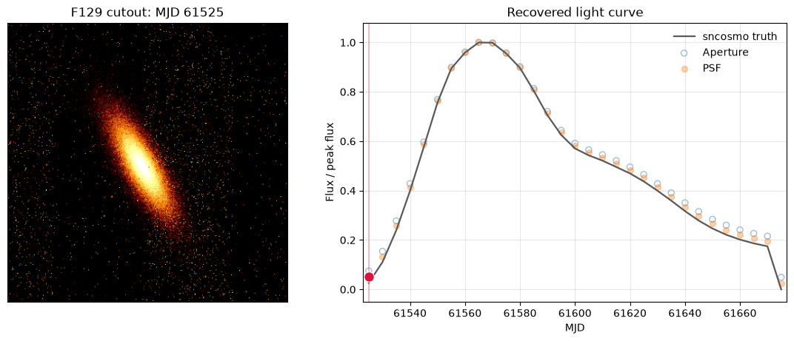
And now the animated plot
light_curve_animation = animation.FuncAnimation(
figure,
update_animation,
frames=len(image_frames),
interval=350,
blit=False,
repeat_delay=1000,
)
output_animation = Path('sn1a_lightcurve.gif')
light_curve_animation.save(
output_animation,
writer=animation.PillowWriter(fps=4),
)
plt.close(figure)
print(f'Image frames: {image_source}')
print(f'Wrote {output_animation}')
display(NotebookImage(filename=str(output_animation)))
Image frames: ../time_domain_simulations/sn1a.gif
Wrote sn1a_lightcurve.gif
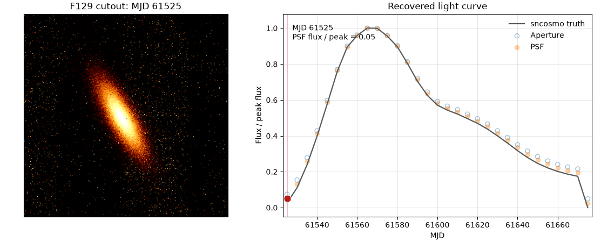
Additional Resources#
About This Notebook#
Author: Melissa Shahbandeh
Updated On: 2026-07-15
| Top of page |
|
|